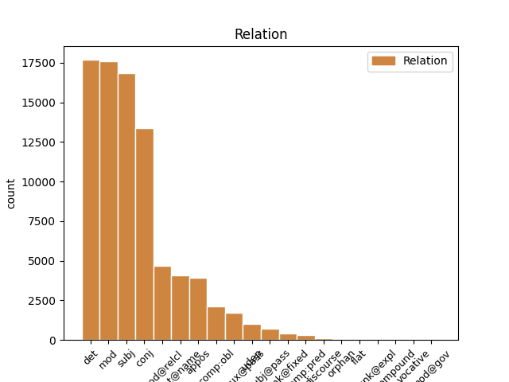
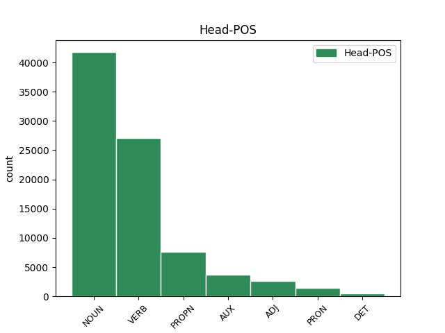
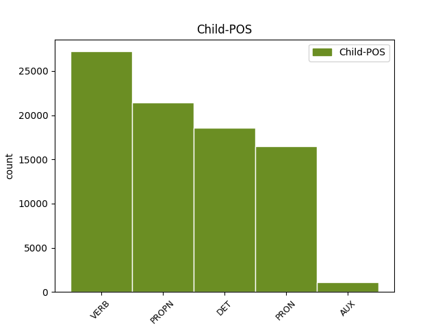

Distribution of features within this leaf



Agreement Rules sorted by frequency.
- When the dependent token is the determiner(det) of the head token, and the dependent token is DET.
1 - _ _ _ _ 0 _ _ _
2 Все весь DET _ Case=Nom|Number=Plur 3 det _ _
3 дороги дорога NOUN _ Animacy=Inan|Case=Nom|Gender=Fem|Number=Plur 0 _ _ _
4 куда-нибудь _ _ _ _ 0 _ _ _
5 ведут _ _ _ _ 0 _ _ _
6 , _ _ _ _ 0 _ _ _
7 - _ _ _ _ 0 _ _ _
8 сказал _ _ _ _ 0 _ _ _
9 он _ _ _ _ 0 _ _ _
10 с _ _ _ _ 0 _ _ _
11 кроткой _ _ _ _ 0 _ _ _
12 убежденностью _ _ _ _ 0 _ _ _
13 и _ _ _ _ 0 _ _ _
14 , _ _ _ _ 0 _ _ _
15 водворив _ _ _ _ 0 _ _ _
16 очки _ _ _ _ 0 _ _ _
17 назад _ _ _ _ 0 _ _ _
18 , _ _ _ _ 0 _ _ _
19 принялся _ _ _ _ 0 _ _ _
20 за _ _ _ _ 0 _ _ _
21 работу _ _ _ _ 0 _ _ _
22 . _ _ _ _ 0 _ _ _
1 - _ _ _ _ 0 _ _ _
2 Я я PRON _ Case=Nom|Number=Sing|Person=1 5 subj _ _
3 обязательно _ _ _ _ 0 _ _ _
4 ее _ _ _ _ 0 _ _ _
5 расчищу расчистить VERB _ Aspect=Perf|Mood=Ind|Number=Sing|Person=1|Tense=Fut|VerbForm=Fin|Voice=Act 0 _ _ _
6 . _ _ _ _ 0 _ _ _
1 Его _ _ _ _ 0 _ _ _
2 не _ _ _ _ 0 _ _ _
3 защищенные защитить VERB _ Aspect=Perf|Case=Nom|Number=Plur|Tense=Past|VerbForm=Part|Voice=Pass 5 mod _ _
4 очками _ _ _ _ 0 _ _ _
5 глаза глаз NOUN _ Animacy=Inan|Case=Nom|Gender=Masc|Number=Plur 0 _ _ _
6 оказались _ _ _ _ 0 _ _ _
7 в _ _ _ _ 0 _ _ _
8 еле _ _ _ _ 0 _ _ _
9 приметном _ _ _ _ 0 _ _ _
10 красном _ _ _ _ 0 _ _ _
11 обводе _ _ _ _ 0 _ _ _
12 , _ _ _ _ 0 _ _ _
13 будто _ _ _ _ 0 _ _ _
14 кто-то _ _ _ _ 0 _ _ _
15 - _ _ _ _ 0 _ _ _
16 провел _ _ _ _ 0 _ _ _
17 по _ _ _ _ 0 _ _ _
18 векам _ _ _ _ 0 _ _ _
19 тончайшей _ _ _ _ 0 _ _ _
20 кисточкой _ _ _ _ 0 _ _ _
21 . _ _ _ _ 0 _ _ _
1 Но _ _ _ _ 0 _ _ _
2 кто-то _ _ _ _ 0 _ _ _
3 идет идти VERB _ Aspect=Imp|Mood=Ind|Number=Sing|Person=3|Tense=Pres|VerbForm=Fin|Voice=Act 0 _ _ _
4 мне _ _ _ _ 0 _ _ _
5 навстречу _ _ _ _ 0 _ _ _
6 и _ _ _ _ 0 _ _ _
7 , _ _ _ _ 0 _ _ _
8 может _ _ _ _ 0 _ _ _
9 быть _ _ _ _ 0 _ _ _
10 , _ _ _ _ 0 _ _ _
11 прошел пройти VERB _ Aspect=Perf|Gender=Masc|Mood=Ind|Number=Sing|Tense=Past|VerbForm=Fin|Voice=Act 3 conj _ _
12 уже _ _ _ _ 0 _ _ _
13 пол _ _ _ _ 0 _ _ _
14 пути _ _ _ _ 0 _ _ _
15 … _ _ _ _ 0 _ _ _
1 Был _ _ _ _ 0 _ _ _
2 ли _ _ _ _ 0 _ _ _
3 в _ _ _ _ 0 _ _ _
4 яви _ _ _ _ 0 _ _ _
5 или _ _ _ _ 0 _ _ _
6 только _ _ _ _ 0 _ _ _
7 приснился _ _ _ _ 0 _ _ _
8 мне _ _ _ _ 0 _ _ _
9 этот _ _ _ _ 0 _ _ _
10 странный _ _ _ _ 0 _ _ _
11 мальчик _ _ _ _ 0 _ _ _
12 , _ _ _ _ 0 _ _ _
13 овеянный _ _ _ _ 0 _ _ _
14 нежностью _ _ _ _ 0 _ _ _
15 и _ _ _ _ 0 _ _ _
16 печалью _ _ _ _ 0 _ _ _
17 нездешности _ _ _ _ 0 _ _ _
18 , _ _ _ _ 0 _ _ _
19 как _ _ _ _ 0 _ _ _
20 Маленький _ _ _ _ 0 _ _ _
21 принц принц NOUN _ Animacy=Anim|Case=Nom|Gender=Masc|Number=Sing 0 _ _ _
22 Антуана Антуан PROPN _ Animacy=Anim|Case=Gen|Gender=Masc|Number=Sing 21 mod _ _
23 де _ _ _ _ 0 _ _ _
24 Сент-Экзюпери _ _ _ _ 0 _ _ _
25 . _ _ _ _ 0 _ _ _
1 На _ _ _ _ 0 _ _ _
2 тех _ _ _ _ 0 _ _ _
3 же _ _ _ _ 0 _ _ _
4 состязаниях _ _ _ _ 0 _ _ _
5 он _ _ _ _ 0 _ _ _
6 опередил _ _ _ _ 0 _ _ _
7 в _ _ _ _ 0 _ _ _
8 беге _ _ _ _ 0 _ _ _
9 всех _ _ _ _ 0 _ _ _
10 , _ _ _ _ 0 _ _ _
11 кроме _ _ _ _ 0 _ _ _
12 длинноногого _ _ _ _ 0 _ _ _
13 учителя _ _ _ _ 0 _ _ _
14 математики _ _ _ _ 0 _ _ _
15 Михаила Михаил PROPN _ Animacy=Anim|Case=Gen|Gender=Masc|Number=Sing 0 _ _ _
16 Александровича Александрович PROPN _ Animacy=Anim|Case=Gen|Gender=Masc|Number=Sing 15 flat@name _ SpaceAfter=No
17 . _ _ _ _ 0 _ _ _
1 Одно _ _ _ _ 0 _ _ _
2 красное _ _ _ _ 0 _ _ _
3 перышко _ _ _ _ 0 _ _ _
4 Павлов Павлов PROPN _ Animacy=Anim|Case=Nom|Gender=Masc|Number=Sing 5 subj _ _
5 взял брать VERB _ Aspect=Perf|Gender=Masc|Mood=Ind|Number=Sing|Tense=Past|VerbForm=Fin|Voice=Act 0 _ _ _
6 с _ _ _ _ 0 _ _ _
7 собой _ _ _ _ 0 _ _ _
8 : _ _ _ _ 0 _ _ _
9 он _ _ _ _ 0 _ _ _
10 уже _ _ _ _ 0 _ _ _
11 научил _ _ _ _ 0 _ _ _
12 близнецов _ _ _ _ 0 _ _ _
13 грубости _ _ _ _ 0 _ _ _
14 недоверия _ _ _ _ 0 _ _ _
15 и _ _ _ _ 0 _ _ _
16 потому _ _ _ _ 0 _ _ _
17 нуждался _ _ _ _ 0 _ _ _
18 в _ _ _ _ 0 _ _ _
19 вещественном _ _ _ _ 0 _ _ _
20 доказательстве _ _ _ _ 0 _ _ _
21 . _ _ _ _ 0 _ _ _
1 И _ _ _ _ 0 _ _ _
2 была _ _ _ _ 0 _ _ _
3 смуглая _ _ _ _ 0 _ _ _
4 девочка девочка NOUN _ Animacy=Anim|Case=Nom|Gender=Fem|Number=Sing 0 _ _ _
5 с _ _ _ _ 0 _ _ _
6 безжалостно _ _ _ _ 0 _ _ _
7 исцарапанными _ _ _ _ 0 _ _ _
8 ногами _ _ _ _ 0 _ _ _
9 , _ _ _ _ 0 _ _ _
10 сбитыми _ _ _ _ 0 _ _ _
11 коленями _ _ _ _ 0 _ _ _
12 , _ _ _ _ 0 _ _ _
13 острыми _ _ _ _ 0 _ _ _
14 лопатками _ _ _ _ 0 _ _ _
15 задиры _ _ _ _ 0 _ _ _
16 - _ _ _ _ 0 _ _ _
17 вылитая _ _ _ _ 0 _ _ _
18 Галя Галя PROPN _ Animacy=Anim|Case=Nom|Gender=Fem|Number=Sing 4 appos _ SpaceAfter=No
19 , _ _ _ _ 0 _ _ _
20 и _ _ _ _ 0 _ _ _
21 воспитательница _ _ _ _ 0 _ _ _
22 , _ _ _ _ 0 _ _ _
23 учившая _ _ _ _ 0 _ _ _
24 детей _ _ _ _ 0 _ _ _
25 какой-то _ _ _ _ 0 _ _ _
26 игре _ _ _ _ 0 _ _ _
27 , _ _ _ _ 0 _ _ _
28 на _ _ _ _ 0 _ _ _
29 мгновение _ _ _ _ 0 _ _ _
30 повернула _ _ _ _ 0 _ _ _
31 ко _ _ _ _ 0 _ _ _
32 мне _ _ _ _ 0 _ _ _
33 светлую _ _ _ _ 0 _ _ _
34 лунность _ _ _ _ 0 _ _ _
35 круглого _ _ _ _ 0 _ _ _
36 Муриного _ _ _ _ 0 _ _ _
37 лица _ _ _ _ 0 _ _ _
38 . _ _ _ _ 0 _ _ _
1 Весь _ _ _ _ 0 _ _ _
2 лес _ _ _ _ 0 _ _ _
3 был _ _ _ _ 0 _ _ _
4 населен _ _ _ _ 0 _ _ _
5 голосами _ _ _ _ 0 _ _ _
6 прошлого _ _ _ _ 0 _ _ _
7 , _ _ _ _ 0 _ _ _
8 и _ _ _ _ 0 _ _ _
9 я _ _ _ _ 0 _ _ _
10 впервые _ _ _ _ 0 _ _ _
11 с _ _ _ _ 0 _ _ _
12 ошеломляющей _ _ _ _ 0 _ _ _
13 силой _ _ _ _ 0 _ _ _
14 ощутил _ _ _ _ 0 _ _ _
15 , _ _ _ _ 0 _ _ _
16 как _ _ _ _ 0 _ _ _
17 много _ _ _ _ 0 _ _ _
18 пробыл _ _ _ _ 0 _ _ _
19 на _ _ _ _ 0 _ _ _
20 этом _ _ _ _ 0 _ _ _
21 свете _ _ _ _ 0 _ _ _
22 и _ _ _ _ 0 _ _ _
23 что _ _ _ _ 0 _ _ _
24 прожитое _ _ _ _ 0 _ _ _
25 - _ _ _ _ 0 _ _ _
26 это _ _ _ _ 0 _ _ _
27 не _ _ _ _ 0 _ _ _
28 разбег _ _ _ _ 0 _ _ _
29 для _ _ _ _ 0 _ _ _
30 взлета _ _ _ _ 0 _ _ _
31 в _ _ _ _ 0 _ _ _
32 какую-то _ _ _ _ 0 _ _ _
33 будущую _ _ _ _ 0 _ _ _
34 , _ _ _ _ 0 _ _ _
35 настоящую _ _ _ _ 0 _ _ _
36 жизнь _ _ _ _ 0 _ _ _
37 , _ _ _ _ 0 _ _ _
38 что _ _ _ _ 0 _ _ _
39 это _ _ _ _ 0 _ _ _
40 уже _ _ _ _ 0 _ _ _
41 жизнь жизнь NOUN _ Animacy=Inan|Case=Nom|Gender=Fem|Number=Sing 0 _ _ _
42 , _ _ _ _ 0 _ _ _
43 в _ _ _ _ 0 _ _ _
44 которой _ _ _ _ 0 _ _ _
45 все _ _ _ _ 0 _ _ _
46 связано связать VERB _ Aspect=Perf|Gender=Neut|Number=Sing|Tense=Past|Variant=Short|VerbForm=Part|Voice=Pass 41 mod@relcl _ SpaceAfter=No
47 : _ _ _ _ 0 _ _ _
48 далекое _ _ _ _ 0 _ _ _
49 прошлое _ _ _ _ 0 _ _ _
50 с _ _ _ _ 0 _ _ _
51 настоящим _ _ _ _ 0 _ _ _
52 , _ _ _ _ 0 _ _ _
53 а _ _ _ _ 0 _ _ _
54 если _ _ _ _ 0 _ _ _
55 мне _ _ _ _ 0 _ _ _
56 суждено _ _ _ _ 0 _ _ _
57 будущее _ _ _ _ 0 _ _ _
58 , _ _ _ _ 0 _ _ _
59 то _ _ _ _ 0 _ _ _
60 и _ _ _ _ 0 _ _ _
61 оно _ _ _ _ 0 _ _ _
62 окажется _ _ _ _ 0 _ _ _
63 нерасторжимо _ _ _ _ 0 _ _ _
64 связанным _ _ _ _ 0 _ _ _
65 с _ _ _ _ 0 _ _ _
66 пережитым _ _ _ _ 0 _ _ _
67 ; _ _ _ _ 0 _ _ _
1 Весь _ _ _ _ 0 _ _ _
2 лес _ _ _ _ 0 _ _ _
3 был быть AUX _ Aspect=Imp|Gender=Masc|Mood=Ind|Number=Sing|Tense=Past|VerbForm=Fin|Voice=Act 0 _ _ _
4 населен населить VERB _ Aspect=Perf|Gender=Masc|Number=Sing|Tense=Past|Variant=Short|VerbForm=Part|Voice=Pass 3 comp:aux@pass _ _
5 голосами _ _ _ _ 0 _ _ _
6 прошлого _ _ _ _ 0 _ _ _
7 , _ _ _ _ 0 _ _ _
8 и _ _ _ _ 0 _ _ _
9 я _ _ _ _ 0 _ _ _
10 впервые _ _ _ _ 0 _ _ _
11 с _ _ _ _ 0 _ _ _
12 ошеломляющей _ _ _ _ 0 _ _ _
13 силой _ _ _ _ 0 _ _ _
14 ощутил _ _ _ _ 0 _ _ _
15 , _ _ _ _ 0 _ _ _
16 как _ _ _ _ 0 _ _ _
17 много _ _ _ _ 0 _ _ _
18 пробыл _ _ _ _ 0 _ _ _
19 на _ _ _ _ 0 _ _ _
20 этом _ _ _ _ 0 _ _ _
21 свете _ _ _ _ 0 _ _ _
22 и _ _ _ _ 0 _ _ _
23 что _ _ _ _ 0 _ _ _
24 прожитое _ _ _ _ 0 _ _ _
25 - _ _ _ _ 0 _ _ _
26 это _ _ _ _ 0 _ _ _
27 не _ _ _ _ 0 _ _ _
28 разбег _ _ _ _ 0 _ _ _
29 для _ _ _ _ 0 _ _ _
30 взлета _ _ _ _ 0 _ _ _
31 в _ _ _ _ 0 _ _ _
32 какую-то _ _ _ _ 0 _ _ _
33 будущую _ _ _ _ 0 _ _ _
34 , _ _ _ _ 0 _ _ _
35 настоящую _ _ _ _ 0 _ _ _
36 жизнь _ _ _ _ 0 _ _ _
37 , _ _ _ _ 0 _ _ _
38 что _ _ _ _ 0 _ _ _
39 это _ _ _ _ 0 _ _ _
40 уже _ _ _ _ 0 _ _ _
41 жизнь _ _ _ _ 0 _ _ _
42 , _ _ _ _ 0 _ _ _
43 в _ _ _ _ 0 _ _ _
44 которой _ _ _ _ 0 _ _ _
45 все _ _ _ _ 0 _ _ _
46 связано _ _ _ _ 0 _ _ _
47 : _ _ _ _ 0 _ _ _
48 далекое _ _ _ _ 0 _ _ _
49 прошлое _ _ _ _ 0 _ _ _
50 с _ _ _ _ 0 _ _ _
51 настоящим _ _ _ _ 0 _ _ _
52 , _ _ _ _ 0 _ _ _
53 а _ _ _ _ 0 _ _ _
54 если _ _ _ _ 0 _ _ _
55 мне _ _ _ _ 0 _ _ _
56 суждено _ _ _ _ 0 _ _ _
57 будущее _ _ _ _ 0 _ _ _
58 , _ _ _ _ 0 _ _ _
59 то _ _ _ _ 0 _ _ _
60 и _ _ _ _ 0 _ _ _
61 оно _ _ _ _ 0 _ _ _
62 окажется _ _ _ _ 0 _ _ _
63 нерасторжимо _ _ _ _ 0 _ _ _
64 связанным _ _ _ _ 0 _ _ _
65 с _ _ _ _ 0 _ _ _
66 пережитым _ _ _ _ 0 _ _ _
67 ; _ _ _ _ 0 _ _ _
1 Мое _ _ _ _ 0 _ _ _
2 сердце _ _ _ _ 0 _ _ _
3 , _ _ _ _ 0 _ _ _
4 моя _ _ _ _ 0 _ _ _
5 боль _ _ _ _ 0 _ _ _
6 неизменно _ _ _ _ 0 _ _ _
7 принадлежали _ _ _ _ 0 _ _ _
8 второму _ _ _ _ 0 _ _ _
9 : _ _ _ _ 0 _ _ _
10 не _ _ _ _ 0 _ _ _
11 Пушкину _ _ _ _ 0 _ _ _
12 , _ _ _ _ 0 _ _ _
13 а _ _ _ _ 0 _ _ _
14 Лермонтову _ _ _ _ 0 _ _ _
15 , _ _ _ _ 0 _ _ _
16 не _ _ _ _ 0 _ _ _
17 Толстому _ _ _ _ 0 _ _ _
18 , _ _ _ _ 0 _ _ _
19 а _ _ _ _ 0 _ _ _
20 Достоевскому _ _ _ _ 0 _ _ _
21 , _ _ _ _ 0 _ _ _
22 не _ _ _ _ 0 _ _ _
23 Алехину _ _ _ _ 0 _ _ _
24 , _ _ _ _ 0 _ _ _
25 а _ _ _ _ 0 _ _ _
26 Капабланке _ _ _ _ 0 _ _ _
27 , _ _ _ _ 0 _ _ _
28 не _ _ _ _ 0 _ _ _
29 Качалову _ _ _ _ 0 _ _ _
30 , _ _ _ _ 0 _ _ _
31 а _ _ _ _ 0 _ _ _
32 Леонидову _ _ _ _ 0 _ _ _
33 , _ _ _ _ 0 _ _ _
34 не _ _ _ _ 0 _ _ _
35 Козловскому Козловский PROPN _ Animacy=Anim|Case=Dat|Gender=Masc|Number=Sing 0 _ _ _
36 , _ _ _ _ 0 _ _ _
37 а _ _ _ _ 0 _ _ _
38 Лемешеву Лемешев PROPN _ Animacy=Anim|Case=Dat|Gender=Masc|Number=Sing 35 conj _ SpaceAfter=No
39 . _ _ _ _ 0 _ _ _
1 Он _ _ _ _ 0 _ _ _
2 осторожно _ _ _ _ 0 _ _ _
3 , _ _ _ _ 0 _ _ _
4 за _ _ _ _ 0 _ _ _
5 дужку _ _ _ _ 0 _ _ _
6 , _ _ _ _ 0 _ _ _
7 снял _ _ _ _ 0 _ _ _
8 очки _ _ _ _ 0 _ _ _
9 , _ _ _ _ 0 _ _ _
10 ему он PRON _ Case=Dat|Gender=Masc|Number=Sing|Person=3 11 comp:obl _ _
11 хотелось хотеться VERB _ Aspect=Imp|Gender=Neut|Mood=Ind|Number=Sing|Tense=Past|VerbForm=Fin|Voice=Mid 0 _ _ _
12 получше _ _ _ _ 0 _ _ _
13 рассмотреть _ _ _ _ 0 _ _ _
14 человека _ _ _ _ 0 _ _ _
15 , _ _ _ _ 0 _ _ _
16 задающего _ _ _ _ 0 _ _ _
17 такие _ _ _ _ 0 _ _ _
18 несуразные _ _ _ _ 0 _ _ _
19 вопросы _ _ _ _ 0 _ _ _
20 , _ _ _ _ 0 _ _ _
21 а _ _ _ _ 0 _ _ _
22 припылившиеся _ _ _ _ 0 _ _ _
23 стекла _ _ _ _ 0 _ _ _
24 только _ _ _ _ 0 _ _ _
25 мешали _ _ _ _ 0 _ _ _
26 . _ _ _ _ 0 _ _ _
1 Но _ _ _ _ 0 _ _ _
2 почему _ _ _ _ 0 _ _ _
3 ни _ _ _ _ 0 _ _ _
4 сам _ _ _ _ 0 _ _ _
5 он _ _ _ _ 0 _ _ _
6 , _ _ _ _ 0 _ _ _
7 ни _ _ _ _ 0 _ _ _
8 жена _ _ _ _ 0 _ _ _
9 не _ _ _ _ 0 _ _ _
10 смогли _ _ _ _ 0 _ _ _
11 подняться _ _ _ _ 0 _ _ _
12 до _ _ _ _ 0 _ _ _
13 простой _ _ _ _ 0 _ _ _
14 веры _ _ _ _ 0 _ _ _
15 в _ _ _ _ 0 _ _ _
16 чудо _ _ _ _ 0 _ _ _
17 , _ _ _ _ 0 _ _ _
18 открывшееся _ _ _ _ 0 _ _ _
19 их они PRON _ Case=Gen|Number=Plur|Person=3 20 mod _ _
20 детям ребенок NOUN _ Animacy=Anim|Case=Dat|Gender=Masc|Number=Plur 0 _ _ _
21 ? _ _ _ _ 0 _ _ _
1 Весь _ _ _ _ 0 _ _ _
2 лес _ _ _ _ 0 _ _ _
3 был _ _ _ _ 0 _ _ _
4 населен _ _ _ _ 0 _ _ _
5 голосами _ _ _ _ 0 _ _ _
6 прошлого _ _ _ _ 0 _ _ _
7 , _ _ _ _ 0 _ _ _
8 и _ _ _ _ 0 _ _ _
9 я _ _ _ _ 0 _ _ _
10 впервые _ _ _ _ 0 _ _ _
11 с _ _ _ _ 0 _ _ _
12 ошеломляющей _ _ _ _ 0 _ _ _
13 силой _ _ _ _ 0 _ _ _
14 ощутил _ _ _ _ 0 _ _ _
15 , _ _ _ _ 0 _ _ _
16 как _ _ _ _ 0 _ _ _
17 много _ _ _ _ 0 _ _ _
18 пробыл _ _ _ _ 0 _ _ _
19 на _ _ _ _ 0 _ _ _
20 этом _ _ _ _ 0 _ _ _
21 свете _ _ _ _ 0 _ _ _
22 и _ _ _ _ 0 _ _ _
23 что _ _ _ _ 0 _ _ _
24 прожитое _ _ _ _ 0 _ _ _
25 - _ _ _ _ 0 _ _ _
26 это _ _ _ _ 0 _ _ _
27 не _ _ _ _ 0 _ _ _
28 разбег _ _ _ _ 0 _ _ _
29 для _ _ _ _ 0 _ _ _
30 взлета _ _ _ _ 0 _ _ _
31 в _ _ _ _ 0 _ _ _
32 какую-то _ _ _ _ 0 _ _ _
33 будущую _ _ _ _ 0 _ _ _
34 , _ _ _ _ 0 _ _ _
35 настоящую _ _ _ _ 0 _ _ _
36 жизнь _ _ _ _ 0 _ _ _
37 , _ _ _ _ 0 _ _ _
38 что _ _ _ _ 0 _ _ _
39 это _ _ _ _ 0 _ _ _
40 уже _ _ _ _ 0 _ _ _
41 жизнь _ _ _ _ 0 _ _ _
42 , _ _ _ _ 0 _ _ _
43 в _ _ _ _ 0 _ _ _
44 которой _ _ _ _ 0 _ _ _
45 все все PRON _ Animacy=Inan|Case=Nom|Gender=Neut|Number=Sing 46 subj@pass _ _
46 связано связать VERB _ Aspect=Perf|Gender=Neut|Number=Sing|Tense=Past|Variant=Short|VerbForm=Part|Voice=Pass 0 _ _ _
47 : _ _ _ _ 0 _ _ _
48 далекое _ _ _ _ 0 _ _ _
49 прошлое _ _ _ _ 0 _ _ _
50 с _ _ _ _ 0 _ _ _
51 настоящим _ _ _ _ 0 _ _ _
52 , _ _ _ _ 0 _ _ _
53 а _ _ _ _ 0 _ _ _
54 если _ _ _ _ 0 _ _ _
55 мне _ _ _ _ 0 _ _ _
56 суждено _ _ _ _ 0 _ _ _
57 будущее _ _ _ _ 0 _ _ _
58 , _ _ _ _ 0 _ _ _
59 то _ _ _ _ 0 _ _ _
60 и _ _ _ _ 0 _ _ _
61 оно _ _ _ _ 0 _ _ _
62 окажется _ _ _ _ 0 _ _ _
63 нерасторжимо _ _ _ _ 0 _ _ _
64 связанным _ _ _ _ 0 _ _ _
65 с _ _ _ _ 0 _ _ _
66 пережитым _ _ _ _ 0 _ _ _
67 ; _ _ _ _ 0 _ _ _
1 Старший _ _ _ _ 0 _ _ _
2 из _ _ _ _ 0 _ _ _
3 близнецов _ _ _ _ 0 _ _ _
4 осторожно _ _ _ _ 0 _ _ _
5 взял _ _ _ _ 0 _ _ _
6 перышко _ _ _ _ 0 _ _ _
7 , _ _ _ _ 0 _ _ _
8 провел _ _ _ _ 0 _ _ _
9 им _ _ _ _ 0 _ _ _
10 по _ _ _ _ 0 _ _ _
11 щеке _ _ _ _ 0 _ _ _
12 и _ _ _ _ 0 _ _ _
13 передал _ _ _ _ 0 _ _ _
14 брату _ _ _ _ 0 _ _ _
15 , _ _ _ _ 0 _ _ _
16 тот тот DET _ Case=Nom|Gender=Masc|Number=Sing 17 subj _ _
17 повторил повторить VERB _ Aspect=Perf|Gender=Masc|Mood=Ind|Number=Sing|Tense=Past|VerbForm=Fin|Voice=Act 0 _ _ _
18 его _ _ _ _ 0 _ _ _
19 жест _ _ _ _ 0 _ _ _
20 . _ _ _ _ 0 _ _ _
1 Это _ _ _ _ 0 _ _ _
2 был _ _ _ _ 0 _ _ _
3 гриб _ _ _ _ 0 _ _ _
4 - _ _ _ _ 0 _ _ _
5 генерал _ _ _ _ 0 _ _ _
6 , _ _ _ _ 0 _ _ _
7 настоящий _ _ _ _ 0 _ _ _
8 предводитель _ _ _ _ 0 _ _ _
9 грибной _ _ _ _ 0 _ _ _
10 рати _ _ _ _ 0 _ _ _
11 , _ _ _ _ 0 _ _ _
12 он _ _ _ _ 0 _ _ _
13 не _ _ _ _ 0 _ _ _
14 мог мочь VERB _ Aspect=Imp|Gender=Masc|Mood=Ind|Number=Sing|Tense=Past|VerbForm=Fin|Voice=Act 0 _ _ _
15 расти _ _ _ _ 0 _ _ _
16 в _ _ _ _ 0 _ _ _
17 одиночку _ _ _ _ 0 _ _ _
18 , _ _ _ _ 0 _ _ _
19 и _ _ _ _ 0 _ _ _
20 надо _ _ _ _ 0 _ _ _
21 было быть AUX _ Aspect=Imp|Gender=Neut|Mood=Ind|Number=Sing|Tense=Past|VerbForm=Fin|Voice=Act 14 conj _ _
22 обрыскать _ _ _ _ 0 _ _ _
23 хвойное _ _ _ _ 0 _ _ _
24 одеяло _ _ _ _ 0 _ _ _
25 у _ _ _ _ 0 _ _ _
26 подножия _ _ _ _ 0 _ _ _
27 ближайших _ _ _ _ 0 _ _ _
28 елей _ _ _ _ 0 _ _ _
29 , _ _ _ _ 0 _ _ _
30 но _ _ _ _ 0 _ _ _
31 я _ _ _ _ 0 _ _ _
32 как-то _ _ _ _ 0 _ _ _
33 ленился _ _ _ _ 0 _ _ _
34 , _ _ _ _ 0 _ _ _
35 и _ _ _ _ 0 _ _ _
36 тут _ _ _ _ 0 _ _ _
37 совсем _ _ _ _ 0 _ _ _
38 отчетливо _ _ _ _ 0 _ _ _
39 , _ _ _ _ 0 _ _ _
40 слышимый _ _ _ _ 0 _ _ _
41 не _ _ _ _ 0 _ _ _
42 внутренним _ _ _ _ 0 _ _ _
43 , _ _ _ _ 0 _ _ _
44 а _ _ _ _ 0 _ _ _
45 внешним _ _ _ _ 0 _ _ _
46 слухом _ _ _ _ 0 _ _ _
47 , _ _ _ _ 0 _ _ _
48 голос _ _ _ _ 0 _ _ _
49 , _ _ _ _ 0 _ _ _
50 исполненный _ _ _ _ 0 _ _ _
51 той _ _ _ _ 0 _ _ _
52 чистой _ _ _ _ 0 _ _ _
53 нежности _ _ _ _ 0 _ _ _
54 , _ _ _ _ 0 _ _ _
55 что _ _ _ _ 0 _ _ _
56 берегла _ _ _ _ 0 _ _ _
57 меня _ _ _ _ 0 _ _ _
58 в _ _ _ _ 0 _ _ _
59 детстве _ _ _ _ 0 _ _ _
60 , _ _ _ _ 0 _ _ _
61 произнес _ _ _ _ 0 _ _ _
62 : _ _ _ _ 0 _ _ _
63 - _ _ _ _ 0 _ _ _
64 Ищи _ _ _ _ 0 _ _ _
65 , _ _ _ _ 0 _ _ _
66 мальчик _ _ _ _ 0 _ _ _
67 , _ _ _ _ 0 _ _ _
68 ты _ _ _ _ 0 _ _ _
69 нырок _ _ _ _ 0 _ _ _
70 ! _ _ _ _ 0 _ _ _
71 . _ _ _ _ 0 _ _ _
72 . _ _ _ _ 0 _ _ _
1 Я _ _ _ _ 0 _ _ _
2 никогда _ _ _ _ 0 _ _ _
3 ее она PRON _ Case=Gen|Gender=Fem|Number=Sing|Person=3 6 udep _ _
4 раньше _ _ _ _ 0 _ _ _
5 не _ _ _ _ 0 _ _ _
6 видел видеть VERB _ Aspect=Imp|Gender=Masc|Mood=Ind|Number=Sing|Tense=Past|VerbForm=Fin|Voice=Act 0 _ _ _
7 . _ _ _ _ 0 _ _ _
1 А _ _ _ _ 0 _ _ _
2 в _ _ _ _ 0 _ _ _
3 Иркутске _ _ _ _ 0 _ _ _
4 переломилось _ _ _ _ 0 _ _ _
5 не _ _ _ _ 0 _ _ _
6 только _ _ _ _ 0 _ _ _
7 мое _ _ _ _ 0 _ _ _
8 комнатное _ _ _ _ 0 _ _ _
9 существование _ _ _ _ 0 _ _ _
10 - _ _ _ _ 0 _ _ _
11 домашний _ _ _ _ 0 _ _ _
12 зверек _ _ _ _ 0 _ _ _
13 увидел _ _ _ _ 0 _ _ _
14 , _ _ _ _ 0 _ _ _
15 как _ _ _ _ 0 _ _ _
16 огромен _ _ _ _ 0 _ _ _
17 , _ _ _ _ 0 _ _ _
18 многообразен _ _ _ _ 0 _ _ _
19 , _ _ _ _ 0 _ _ _
20 сложен _ _ _ _ 0 _ _ _
21 мир _ _ _ _ 0 _ _ _
22 , _ _ _ _ 0 _ _ _
23 свершился _ _ _ _ 0 _ _ _
24 переход _ _ _ _ 0 _ _ _
25 от _ _ _ _ 0 _ _ _
26 младенческой _ _ _ _ 0 _ _ _
27 всеядности _ _ _ _ 0 _ _ _
28 к _ _ _ _ 0 _ _ _
29 отбору _ _ _ _ 0 _ _ _
30 , _ _ _ _ 0 _ _ _
31 то то PRON _ Animacy=Inan|Case=Nom|Gender=Neut|Number=Sing 0 _ _ _
32 есть быть VERB _ Aspect=Imp|Mood=Ind|Number=Sing|Person=3|Tense=Pres|VerbForm=Fin|Voice=Act 31 unk@fixed _ _
33 к _ _ _ _ 0 _ _ _
34 характеру _ _ _ _ 0 _ _ _
35 . _ _ _ _ 0 _ _ _
1 - _ _ _ _ 0 _ _ _
2 У _ _ _ _ 0 _ _ _
3 меня я PRON _ Case=Gen|Number=Sing|Person=1 0 _ _ _
4 одного один DET _ Case=Gen|Degree=Pos|Gender=Masc|Number=Sing 3 mod _ _
5 - _ _ _ _ 0 _ _ _
6 нет _ _ _ _ 0 _ _ _
7 . _ _ _ _ 0 _ _ _
1 Вдова _ _ _ _ 0 _ _ _
2 третьего _ _ _ _ 0 _ _ _
3 во _ _ _ _ 0 _ _ _
4 втором _ _ _ _ 0 _ _ _
5 ряду _ _ _ _ 0 _ _ _
6 приходилась приходиться VERB _ Aspect=Imp|Gender=Fem|Mood=Ind|Number=Sing|Tense=Past|VerbForm=Fin|Voice=Mid 0 _ _ _
7 Павлову Павлов PROPN _ Animacy=Anim|Case=Dat|Gender=Masc|Number=Sing 6 comp:obl _ _
8 матерью _ _ _ _ 0 _ _ _
9 , _ _ _ _ 0 _ _ _
10 дочь _ _ _ _ 0 _ _ _
11 - _ _ _ _ 0 _ _ _
12 сестрой _ _ _ _ 0 _ _ _
13 , _ _ _ _ 0 _ _ _
14 обе _ _ _ _ 0 _ _ _
15 требовали _ _ _ _ 0 _ _ _
16 постоянной _ _ _ _ 0 _ _ _
17 заботы _ _ _ _ 0 _ _ _
18 . _ _ _ _ 0 _ _ _
1 Возле _ _ _ _ 0 _ _ _
2 поселка _ _ _ _ 0 _ _ _
3 находился _ _ _ _ 0 _ _ _
4 санаторий _ _ _ _ 0 _ _ _
5 , _ _ _ _ 0 _ _ _
6 там _ _ _ _ 0 _ _ _
7 шло _ _ _ _ 0 _ _ _
8 строительство _ _ _ _ 0 _ _ _
9 и _ _ _ _ 0 _ _ _
10 была _ _ _ _ 0 _ _ _
11 нужда _ _ _ _ 0 _ _ _
12 в _ _ _ _ 0 _ _ _
13 главном _ _ _ _ 0 _ _ _
14 инженере _ _ _ _ 0 _ _ _
15 ; _ _ _ _ 0 _ _ _
16 под _ _ _ _ 0 _ _ _
17 боком _ _ _ _ 0 _ _ _
18 располагалась _ _ _ _ 0 _ _ _
19 отличная _ _ _ _ 0 _ _ _
20 школа школа NOUN _ Animacy=Inan|Case=Nom|Gender=Fem|Number=Sing 0 _ _ _
21 - _ _ _ _ 0 _ _ _
22 десятилетка _ _ _ _ 0 _ _ _
23 , _ _ _ _ 0 _ _ _
24 где _ _ _ _ 0 _ _ _
25 как _ _ _ _ 0 _ _ _
26 раз _ _ _ _ 0 _ _ _
27 нужен _ _ _ _ 0 _ _ _
28 был быть AUX _ Aspect=Imp|Gender=Masc|Mood=Ind|Number=Sing|Tense=Past|VerbForm=Fin|Voice=Act 20 mod@relcl _ _
29 преподаватель _ _ _ _ 0 _ _ _
30 английского _ _ _ _ 0 _ _ _
31 языка _ _ _ _ 0 _ _ _
32 , _ _ _ _ 0 _ _ _
33 а _ _ _ _ 0 _ _ _
34 жена _ _ _ _ 0 _ _ _
35 Павлова _ _ _ _ 0 _ _ _
36 занималась _ _ _ _ 0 _ _ _
37 техническими _ _ _ _ 0 _ _ _
38 переводами _ _ _ _ 0 _ _ _
39 с _ _ _ _ 0 _ _ _
40 английского _ _ _ _ 0 _ _ _
41 . _ _ _ _ 0 _ _ _
1 - _ _ _ _ 0 _ _ _
2 Разве _ _ _ _ 0 _ _ _
3 мы _ _ _ _ 0 _ _ _
4 знаем знать VERB _ Aspect=Imp|Mood=Ind|Number=Plur|Person=1|Tense=Pres|VerbForm=Fin|Voice=Act 0 _ _ _
5 , _ _ _ _ 0 _ _ _
6 почему _ _ _ _ 0 _ _ _
7 дорогу _ _ _ _ 0 _ _ _
8 забросили забросить VERB _ Aspect=Perf|Mood=Ind|Number=Plur|Tense=Past|VerbForm=Fin|Voice=Act 4 comp:pred _ SpaceAfter=No
9 ? _ _ _ _ 0 _ _ _
1 Но _ _ _ _ 0 _ _ _
2 вот _ _ _ _ 0 _ _ _
3 что _ _ _ _ 0 _ _ _
4 касается касаться VERB _ Aspect=Imp|Mood=Ind|Number=Sing|Person=3|Tense=Pres|VerbForm=Fin|Voice=Mid 0 _ _ _
5 " _ _ _ _ 0 _ _ _
6 Великой _ _ _ _ 0 _ _ _
7 , _ _ _ _ 0 _ _ _
8 неделимой _ _ _ _ 0 _ _ _
9 Русской _ _ _ _ 0 _ _ _
10 Империи Империя PROPN _ Animacy=Inan|Case=Gen|Gender=Fem|Number=Sing 4 udep _ SpaceAfter=No
11 " _ _ _ _ 0 _ _ _
12 , _ _ _ _ 0 _ _ _
13 тут _ _ _ _ 0 _ _ _
14 мы _ _ _ _ 0 _ _ _
15 действительно _ _ _ _ 0 _ _ _
16 большого _ _ _ _ 0 _ _ _
17 родства _ _ _ _ 0 _ _ _
18 не _ _ _ _ 0 _ _ _
19 ощущаем _ _ _ _ 0 _ _ _
20 . _ _ _ _ 0 _ _ _
1 Дети _ _ _ _ 0 _ _ _
2 часами _ _ _ _ 0 _ _ _
3 могли _ _ _ _ 0 _ _ _
4 следить _ _ _ _ 0 _ _ _
5 за _ _ _ _ 0 _ _ _
6 дятлом _ _ _ _ 0 _ _ _
7 , _ _ _ _ 0 _ _ _
8 который _ _ _ _ 0 _ _ _
9 с _ _ _ _ 0 _ _ _
10 таким _ _ _ _ 0 _ _ _
11 неистовством _ _ _ _ 0 _ _ _
12 долбил _ _ _ _ 0 _ _ _
13 клювом _ _ _ _ 0 _ _ _
14 сосну _ _ _ _ 0 _ _ _
15 , _ _ _ _ 0 _ _ _
16 что _ _ _ _ 0 _ _ _
17 казалось казаться VERB _ Aspect=Imp|Gender=Neut|Mood=Ind|Number=Sing|Tense=Past|VerbForm=Fin|Voice=Mid 0 _ _ _
18 , _ _ _ _ 0 _ _ _
19 вот-вот _ _ _ _ 0 _ _ _
20 отвалится отвалиться VERB _ Aspect=Perf|Mood=Ind|Number=Sing|Person=3|Tense=Fut|VerbForm=Fin|Voice=Mid 17 subj _ _
21 его _ _ _ _ 0 _ _ _
22 остренькая _ _ _ _ 0 _ _ _
23 головка _ _ _ _ 0 _ _ _
24 . _ _ _ _ 0 _ _ _
1 Уже _ _ _ _ 0 _ _ _
2 на _ _ _ _ 0 _ _ _
3 первой _ _ _ _ 0 _ _ _
4 сессии _ _ _ _ 0 _ _ _
5 вновь _ _ _ _ 0 _ _ _
6 избранного _ _ _ _ 0 _ _ _
7 Верховного _ _ _ _ 0 _ _ _
8 Совета _ _ _ _ 0 _ _ _
9 СССР _ _ _ _ 0 _ _ _
10 будут быть AUX _ Aspect=Imp|Mood=Ind|Number=Plur|Person=3|Tense=Pres|VerbForm=Fin|Voice=Act 0 _ _ _
11 вынесены _ _ _ _ 0 _ _ _
12 Законы Закон PROPN _ Animacy=Inan|Case=Nom|Gender=Masc|Number=Plur 10 subj@pass _ _
13 о _ _ _ _ 0 _ _ _
14 профсоюзах _ _ _ _ 0 _ _ _
15 , _ _ _ _ 0 _ _ _
16 о _ _ _ _ 0 _ _ _
17 молодежи _ _ _ _ 0 _ _ _
18 , _ _ _ _ 0 _ _ _
19 о _ _ _ _ 0 _ _ _
20 печати _ _ _ _ 0 _ _ _
21 , _ _ _ _ 0 _ _ _
22 о _ _ _ _ 0 _ _ _
23 гласности _ _ _ _ 0 _ _ _
24 в _ _ _ _ 0 _ _ _
25 работе _ _ _ _ 0 _ _ _
26 государственных _ _ _ _ 0 _ _ _
27 органов _ _ _ _ 0 _ _ _
28 и _ _ _ _ 0 _ _ _
29 общественных _ _ _ _ 0 _ _ _
30 организаций _ _ _ _ 0 _ _ _
31 , _ _ _ _ 0 _ _ _
32 о _ _ _ _ 0 _ _ _
33 добровольных _ _ _ _ 0 _ _ _
34 обществах _ _ _ _ 0 _ _ _
35 , _ _ _ _ 0 _ _ _
36 об _ _ _ _ 0 _ _ _
37 Основах _ _ _ _ 0 _ _ _
38 уголовного _ _ _ _ 0 _ _ _
39 законодательства _ _ _ _ 0 _ _ _
40 , _ _ _ _ 0 _ _ _
41 пенсионном _ _ _ _ 0 _ _ _
42 обеспечении _ _ _ _ 0 _ _ _
43 и _ _ _ _ 0 _ _ _
44 другие _ _ _ _ 0 _ _ _
45 . _ _ _ _ 0 _ _ _
1 Мы _ _ _ _ 0 _ _ _
2 - _ _ _ _ 0 _ _ _
3 мама _ _ _ _ 0 _ _ _
4 , _ _ _ _ 0 _ _ _
5 дед дед NOUN _ Animacy=Anim|Case=Nom|Gender=Masc|Number=Sing 0 _ _ _
6 и _ _ _ _ 0 _ _ _
7 я я PRON _ Case=Nom|Number=Sing|Person=1 5 conj _ _
8 - _ _ _ _ 0 _ _ _
9 довольно _ _ _ _ 0 _ _ _
10 долго _ _ _ _ 0 _ _ _
11 томились _ _ _ _ 0 _ _ _
12 перед _ _ _ _ 0 _ _ _
13 высокими _ _ _ _ 0 _ _ _
14 стенами _ _ _ _ 0 _ _ _
15 тюрьмы _ _ _ _ 0 _ _ _
16 , _ _ _ _ 0 _ _ _
17 затем _ _ _ _ 0 _ _ _
18 нас _ _ _ _ 0 _ _ _
19 впустили _ _ _ _ 0 _ _ _
20 во _ _ _ _ 0 _ _ _
21 внутренний _ _ _ _ 0 _ _ _
22 двор _ _ _ _ 0 _ _ _
23 , _ _ _ _ 0 _ _ _
24 битком _ _ _ _ 0 _ _ _
25 набитый _ _ _ _ 0 _ _ _
26 такими _ _ _ _ 0 _ _ _
27 же _ _ _ _ 0 _ _ _
28 как _ _ _ _ 0 _ _ _
29 и _ _ _ _ 0 _ _ _
30 мы _ _ _ _ 0 _ _ _
31 , _ _ _ _ 0 _ _ _
32 прощающимися _ _ _ _ 0 _ _ _
33 . _ _ _ _ 0 _ _ _
1 Потом _ _ _ _ 0 _ _ _
2 органическая _ _ _ _ 0 _ _ _
3 фаза _ _ _ _ 0 _ _ _
4 отслаивается отслаиваться VERB _ Aspect=Imp|Mood=Ind|Number=Sing|Person=3|Tense=Pres|VerbForm=Fin|Voice=Mid 0 _ _ _
5 ( _ _ _ _ 0 _ _ _
6 она _ _ _ _ 0 _ _ _
7 не _ _ _ _ 0 _ _ _
8 смешивается смешиваться VERB _ Aspect=Imp|Mood=Ind|Number=Sing|Person=3|Tense=Pres|VerbForm=Fin|Voice=Mid 4 appos _ _
9 с _ _ _ _ 0 _ _ _
10 водой _ _ _ _ 0 _ _ _
11 ) _ _ _ _ 0 _ _ _
12 и _ _ _ _ 0 _ _ _
13 поступает _ _ _ _ 0 _ _ _
14 в _ _ _ _ 0 _ _ _
15 реэкстрактор _ _ _ _ 0 _ _ _
16 . _ _ _ _ 0 _ _ _
1 Велика _ _ _ _ 0 _ _ _
2 неявка _ _ _ _ 0 _ _ _
3 избирателей _ _ _ _ 0 _ _ _
4 … _ _ _ _ 0 _ _ _
5 и _ _ _ _ 0 _ _ _
6 тем то PRON _ Animacy=Inan|Case=Ins|Gender=Neut|Number=Sing 13 discourse _ _
7 не _ _ _ _ 0 _ _ _
8 менее _ _ _ _ 0 _ _ _
9 в _ _ _ _ 0 _ _ _
10 итоге _ _ _ _ 0 _ _ _
11 кандидат _ _ _ _ 0 _ _ _
12 " _ _ _ _ 0 _ _ _
13 избирается избирать VERB _ Aspect=Imp|Mood=Ind|Number=Sing|Person=3|Tense=Pres|VerbForm=Fin|Voice=Pass 0 _ _ _
14 " _ _ _ _ 0 _ _ _
15 депутатом _ _ _ _ 0 _ _ _
16 . _ _ _ _ 0 _ _ _
1 Ссылаясь _ _ _ _ 0 _ _ _
2 на _ _ _ _ 0 _ _ _
3 западные _ _ _ _ 0 _ _ _
4 и _ _ _ _ 0 _ _ _
5 русские _ _ _ _ 0 _ _ _
6 источники _ _ _ _ 0 _ _ _
7 , _ _ _ _ 0 _ _ _
8 Матфей _ _ _ _ 0 _ _ _
9 Стрийковский _ _ _ _ 0 _ _ _
10 в _ _ _ _ 0 _ _ _
11 своей _ _ _ _ 0 _ _ _
12 " _ _ _ _ 0 _ _ _
13 Хронике _ _ _ _ 0 _ _ _
14 " _ _ _ _ 0 _ _ _
15 пишет _ _ _ _ 0 _ _ _
16 , _ _ _ _ 0 _ _ _
17 что _ _ _ _ 0 _ _ _
18 " _ _ _ _ 0 _ _ _
19 с _ _ _ _ 0 _ _ _
20 этого _ _ _ _ 0 _ _ _
21 времени время NOUN _ Animacy=Inan|Case=Gen|Gender=Neut|Number=Sing 0 _ _ _
22 ( _ _ _ _ 0 _ _ _
23 то то PRON _ Animacy=Inan|Case=Nom|Gender=Neut|Number=Sing 21 appos _ _
24 есть _ _ _ _ 0 _ _ _
25 после _ _ _ _ 0 _ _ _
26 крещения _ _ _ _ 0 _ _ _
27 Руси _ _ _ _ 0 _ _ _
28 ) _ _ _ _ 0 _ _ _
29 все _ _ _ _ 0 _ _ _
30 русские _ _ _ _ 0 _ _ _
31 народы _ _ _ _ 0 _ _ _
32 Белой _ _ _ _ 0 _ _ _
33 , _ _ _ _ 0 _ _ _
34 Восточной _ _ _ _ 0 _ _ _
35 , _ _ _ _ 0 _ _ _
36 Северной _ _ _ _ 0 _ _ _
37 и _ _ _ _ 0 _ _ _
38 на _ _ _ _ 0 _ _ _
39 Юге _ _ _ _ 0 _ _ _
40 расположенной _ _ _ _ 0 _ _ _
41 Руси _ _ _ _ 0 _ _ _
42 , _ _ _ _ 0 _ _ _
43 постоянно _ _ _ _ 0 _ _ _
44 и _ _ _ _ 0 _ _ _
45 твердо _ _ _ _ 0 _ _ _
46 пребывают _ _ _ _ 0 _ _ _
47 в _ _ _ _ 0 _ _ _
48 вере _ _ _ _ 0 _ _ _
49 христианской _ _ _ _ 0 _ _ _
50 за _ _ _ _ 0 _ _ _
51 обрядом _ _ _ _ 0 _ _ _
52 и _ _ _ _ 0 _ _ _
53 обычаями _ _ _ _ 0 _ _ _
54 греческими _ _ _ _ 0 _ _ _
55 , _ _ _ _ 0 _ _ _
56 под _ _ _ _ 0 _ _ _
57 главенством _ _ _ _ 0 _ _ _
58 Константинопольского _ _ _ _ 0 _ _ _
59 патриарха _ _ _ _ 0 _ _ _
60 " _ _ _ _ 0 _ _ _
61 . _ _ _ _ 0 _ _ _
1 В _ _ _ _ 0 _ _ _
2 этом _ _ _ _ 0 _ _ _
3 послании _ _ _ _ 0 _ _ _
4 , _ _ _ _ 0 _ _ _
5 в _ _ _ _ 0 _ _ _
6 частности _ _ _ _ 0 _ _ _
7 , _ _ _ _ 0 _ _ _
8 говорилось _ _ _ _ 0 _ _ _
9 : _ _ _ _ 0 _ _ _
10 " _ _ _ _ 0 _ _ _
11 Хотя _ _ _ _ 0 _ _ _
12 церковь _ _ _ _ 0 _ _ _
13 Руси _ _ _ _ 0 _ _ _
14 уже _ _ _ _ 0 _ _ _
15 давно _ _ _ _ 0 _ _ _
16 отделена отделить VERB _ Aspect=Perf|Gender=Fem|Number=Sing|Tense=Past|Variant=Short|VerbForm=Part|Voice=Pass 0 _ _ _
17 от _ _ _ _ 0 _ _ _
18 лона _ _ _ _ 0 _ _ _
19 своей _ _ _ _ 0 _ _ _
20 матери _ _ _ _ 0 _ _ _
21 - _ _ _ _ 0 _ _ _
22 римской _ _ _ _ 0 _ _ _
23 церкви _ _ _ _ 0 _ _ _
24 ( _ _ _ _ 0 _ _ _
25 как _ _ _ _ 0 _ _ _
26 будто _ _ _ _ 0 _ _ _
27 бы _ _ _ _ 0 _ _ _
28 действительно _ _ _ _ 0 _ _ _
29 когда-то _ _ _ _ 0 _ _ _
30 Русь _ _ _ _ 0 _ _ _
31 была быть AUX _ Aspect=Imp|Gender=Fem|Mood=Ind|Number=Sing|Tense=Past|VerbForm=Fin|Voice=Act 16 mod _ _
32 в _ _ _ _ 0 _ _ _
33 лоне _ _ _ _ 0 _ _ _
34 Рима _ _ _ _ 0 _ _ _
35 ! _ _ _ _ 0 _ _ _
36 ) _ _ _ _ 0 _ _ _
37 , _ _ _ _ 0 _ _ _
38 папа _ _ _ _ 0 _ _ _
39 не _ _ _ _ 0 _ _ _
40 может _ _ _ _ 0 _ _ _
41 сдержать _ _ _ _ 0 _ _ _
42 в _ _ _ _ 0 _ _ _
43 себе _ _ _ _ 0 _ _ _
44 отцовских _ _ _ _ 0 _ _ _
45 чувств _ _ _ _ 0 _ _ _
46 к _ _ _ _ 0 _ _ _
47 православной _ _ _ _ 0 _ _ _
48 Руси _ _ _ _ 0 _ _ _
49 и _ _ _ _ 0 _ _ _
50 зовет _ _ _ _ 0 _ _ _
51 ее _ _ _ _ 0 _ _ _
52 к _ _ _ _ 0 _ _ _
53 себе _ _ _ _ 0 _ _ _
54 " _ _ _ _ 0 _ _ _
55 . _ _ _ _ 0 _ _ _
1 Компания _ _ _ _ 0 _ _ _
2 Ford _ _ _ _ 0 _ _ _
3 выпустила _ _ _ _ 0 _ _ _
4 в _ _ _ _ 0 _ _ _
5 ограниченном _ _ _ _ 0 _ _ _
6 количестве _ _ _ _ 0 _ _ _
7 финальную _ _ _ _ 0 _ _ _
8 версию _ _ _ _ 0 _ _ _
9 модели _ _ _ _ 0 _ _ _
10 Lincoln Lincoln PROPN _ Animacy=Inan|Case=Gen|Foreign=Yes|Gender=Fem|Number=Sing 0 _ _ _
11 continental Continental PROPN _ Animacy=Inan|Case=Gen|Foreign=Yes|Gender=Fem|Number=Sing 10 flat _ SpaceAfter=No
12 . _ _ _ _ 0 _ _ _
1 Очень _ _ _ _ 0 _ _ _
2 сильная _ _ _ _ 0 _ _ _
3 , _ _ _ _ 0 _ _ _
4 очень _ _ _ _ 0 _ _ _
5 настоящая _ _ _ _ 0 _ _ _
6 любовь _ _ _ _ 0 _ _ _
7 делает _ _ _ _ 0 _ _ _
8 провидцем _ _ _ _ 0 _ _ _
9 всякого _ _ _ _ 0 _ _ _
10 человека _ _ _ _ 0 _ _ _
11 , _ _ _ _ 0 _ _ _
12 даже _ _ _ _ 0 _ _ _
13 такого _ _ _ _ 0 _ _ _
14 маленького _ _ _ _ 0 _ _ _
15 , _ _ _ _ 0 _ _ _
16 каким какой DET _ Case=Ins|Gender=Masc|Number=Sing 17 comp:pred _ _
17 был быть AUX _ Aspect=Imp|Gender=Masc|Mood=Ind|Number=Sing|Tense=Past|VerbForm=Fin|Voice=Act 0 _ _ _
18 я _ _ _ _ 0 _ _ _
19 тогда _ _ _ _ 0 _ _ _
20 . _ _ _ _ 0 _ _ _
1 Одни один DET _ Case=Nom|Degree=Pos|Number=Plur 2 udep _ _
2 видят видеть VERB _ Aspect=Imp|Mood=Ind|Number=Plur|Person=3|Tense=Pres|VerbForm=Fin|Voice=Act 0 _ _ _
3 в _ _ _ _ 0 _ _ _
4 нем _ _ _ _ 0 _ _ _
5 лишь _ _ _ _ 0 _ _ _
6 средство _ _ _ _ 0 _ _ _
7 общения _ _ _ _ 0 _ _ _
8 , _ _ _ _ 0 _ _ _
9 другие _ _ _ _ 0 _ _ _
10 душу _ _ _ _ 0 _ _ _
11 народа _ _ _ _ 0 _ _ _
12 , _ _ _ _ 0 _ _ _
13 выражение _ _ _ _ 0 _ _ _
14 его _ _ _ _ 0 _ _ _
15 характера _ _ _ _ 0 _ _ _
16 , _ _ _ _ 0 _ _ _
17 самобытности _ _ _ _ 0 _ _ _
18 . _ _ _ _ 0 _ _ _
1 Казалось _ _ _ _ 0 _ _ _
2 , _ _ _ _ 0 _ _ _
3 каждый каждый DET _ Case=Nom|Gender=Masc|Number=Sing 6 subj@pass _ _
4 из _ _ _ _ 0 _ _ _
5 них _ _ _ _ 0 _ _ _
6 заключен заключить VERB _ Aspect=Perf|Gender=Masc|Number=Sing|Tense=Past|Variant=Short|VerbForm=Part|Voice=Pass 0 _ _ _
7 в _ _ _ _ 0 _ _ _
8 прозрачную _ _ _ _ 0 _ _ _
9 до _ _ _ _ 0 _ _ _
10 незримости _ _ _ _ 0 _ _ _
11 оболочку _ _ _ _ 0 _ _ _
12 , _ _ _ _ 0 _ _ _
13 проницаемую _ _ _ _ 0 _ _ _
14 лишь _ _ _ _ 0 _ _ _
15 для _ _ _ _ 0 _ _ _
16 им _ _ _ _ 0 _ _ _
17 подобных _ _ _ _ 0 _ _ _
18 . _ _ _ _ 0 _ _ _
1 Павлов _ _ _ _ 0 _ _ _
2 готов _ _ _ _ 0 _ _ _
3 был быть AUX _ Aspect=Imp|Gender=Masc|Mood=Ind|Number=Sing|Tense=Past|VerbForm=Fin|Voice=Act 0 _ _ _
4 восторгаться _ _ _ _ 0 _ _ _
5 рыцарственным _ _ _ _ 0 _ _ _
6 служением _ _ _ _ 0 _ _ _
7 близнецов _ _ _ _ 0 _ _ _
8 своей _ _ _ _ 0 _ _ _
9 мечте _ _ _ _ 0 _ _ _
10 , _ _ _ _ 0 _ _ _
11 будь быть AUX _ Aspect=Imp|Mood=Imp|Number=Sing|Person=2|VerbForm=Fin|Voice=Act 3 udep _ _
12 эта _ _ _ _ 0 _ _ _
13 мечта _ _ _ _ 0 _ _ _
14 достижимой _ _ _ _ 0 _ _ _
15 . _ _ _ _ 0 _ _ _
1 Это это PRON _ Animacy=Inan|Case=Nom|Gender=Neut|Number=Sing 3 unk@expl _ _
2 ему _ _ _ _ 0 _ _ _
3 повезло везти VERB _ Aspect=Perf|Gender=Neut|Mood=Ind|Number=Sing|Tense=Past|VerbForm=Fin|Voice=Act 0 _ _ _
4 . _ _ _ _ 0 _ _ _
1 Матери _ _ _ _ 0 _ _ _
2 фамилия _ _ _ _ 0 _ _ _
3 была быть AUX _ Aspect=Imp|Gender=Fem|Mood=Ind|Number=Sing|Tense=Past|VerbForm=Fin|Voice=Act 0 _ _ _
4 Делянкина Делянкина PROPN _ Animacy=Inan|Case=Nom|Gender=Fem|Number=Sing 3 comp:pred _ SpaceAfter=No
5 , _ _ _ _ 0 _ _ _
6 его _ _ _ _ 0 _ _ _
7 - _ _ _ _ 0 _ _ _
8 Гарусов _ _ _ _ 0 _ _ _
9 , _ _ _ _ 0 _ _ _
10 по _ _ _ _ 0 _ _ _
11 отцу _ _ _ _ 0 _ _ _
12 . _ _ _ _ 0 _ _ _
1 Среди _ _ _ _ 0 _ _ _
2 них _ _ _ _ 0 _ _ _
3 - _ _ _ _ 0 _ _ _
4 Фестиваль _ _ _ _ 0 _ _ _
5 Современного _ _ _ _ 0 _ _ _
6 британского _ _ _ _ 0 _ _ _
7 кино _ _ _ _ 0 _ _ _
8 , _ _ _ _ 0 _ _ _
9 серия _ _ _ _ 0 _ _ _
10 презентаций _ _ _ _ 0 _ _ _
11 и _ _ _ _ 0 _ _ _
12 семинаров _ _ _ _ 0 _ _ _
13 , _ _ _ _ 0 _ _ _
14 а _ _ _ _ 0 _ _ _
15 также _ _ _ _ 0 _ _ _
16 открытие _ _ _ _ 0 _ _ _
17 Интернет Интернет PROPN _ Animacy=Inan|Case=Nom|Gender=Masc|Number=Sing 19 compound _ SpaceAfter=No
18 - _ _ _ _ 0 _ _ _
19 портала портал NOUN _ Animacy=Inan|Case=Gen|Gender=Masc|Number=Sing 0 _ _ _
20 , _ _ _ _ 0 _ _ _
21 посвященного _ _ _ _ 0 _ _ _
22 молодежной _ _ _ _ 0 _ _ _
23 культуре _ _ _ _ 0 _ _ _
24 Англии _ _ _ _ 0 _ _ _
25 . _ _ _ _ 0 _ _ _
1 Подумалось думаться VERB _ Aspect=Perf|Gender=Neut|Mood=Ind|Number=Sing|Tense=Past|VerbForm=Fin|Voice=Mid 0 _ _ _
2 : _ _ _ _ 0 _ _ _
3 каким _ _ _ _ 0 _ _ _
4 же _ _ _ _ 0 _ _ _
5 сильным _ _ _ _ 0 _ _ _
6 и _ _ _ _ 0 _ _ _
7 бездушным _ _ _ _ 0 _ _ _
8 должен _ _ _ _ 0 _ _ _
9 был быть AUX _ Aspect=Imp|Gender=Masc|Mood=Ind|Number=Sing|Tense=Past|VerbForm=Fin|Voice=Act 1 subj _ _
10 быть _ _ _ _ 0 _ _ _
11 " _ _ _ _ 0 _ _ _
12 свинтус _ _ _ _ 0 _ _ _
13 грандиозус _ _ _ _ 0 _ _ _
14 " _ _ _ _ 0 _ _ _
15 , _ _ _ _ 0 _ _ _
16 своим _ _ _ _ 0 _ _ _
17 рылом _ _ _ _ 0 _ _ _
18 перевернувший _ _ _ _ 0 _ _ _
19 , _ _ _ _ 0 _ _ _
20 изувечивший _ _ _ _ 0 _ _ _
21 , _ _ _ _ 0 _ _ _
22 испоганивший _ _ _ _ 0 _ _ _
23 землю _ _ _ _ 0 _ _ _
24 , _ _ _ _ 0 _ _ _
25 которая _ _ _ _ 0 _ _ _
26 кормила _ _ _ _ 0 _ _ _
27 человека _ _ _ _ 0 _ _ _
28 , _ _ _ _ 0 _ _ _
29 была _ _ _ _ 0 _ _ _
30 ему _ _ _ _ 0 _ _ _
31 родиной _ _ _ _ 0 _ _ _
32 ! _ _ _ _ 0 _ _ _
1 Занятия _ _ _ _ 0 _ _ _
2 начинались _ _ _ _ 0 _ _ _
3 по _ _ _ _ 0 _ _ _
4 мере мера NOUN _ Animacy=Inan|Case=Dat|Gender=Fem|Number=Sing 0 _ _ _
5 того то PRON _ Animacy=Inan|Case=Gen|Gender=Neut|Number=Sing 4 unk@fixed _ _
6 как _ _ _ _ 0 _ _ _
7 детишки _ _ _ _ 0 _ _ _
8 сами _ _ _ _ 0 _ _ _
9 или _ _ _ _ 0 _ _ _
10 по _ _ _ _ 0 _ _ _
11 наущению _ _ _ _ 0 _ _ _
12 родителей _ _ _ _ 0 _ _ _
13 заглядывали _ _ _ _ 0 _ _ _
14 в _ _ _ _ 0 _ _ _
15 школу _ _ _ _ 0 _ _ _
16 и _ _ _ _ 0 _ _ _
17 своими _ _ _ _ 0 _ _ _
18 вопросами _ _ _ _ 0 _ _ _
19 о _ _ _ _ 0 _ _ _
20 том _ _ _ _ 0 _ _ _
21 , _ _ _ _ 0 _ _ _
22 когда _ _ _ _ 0 _ _ _
23 же _ _ _ _ 0 _ _ _
24 начнутся _ _ _ _ 0 _ _ _
25 занятия _ _ _ _ 0 _ _ _
26 , _ _ _ _ 0 _ _ _
27 побуждали _ _ _ _ 0 _ _ _
28 учительницу _ _ _ _ 0 _ _ _
29 приступить _ _ _ _ 0 _ _ _
30 к _ _ _ _ 0 _ _ _
31 делу _ _ _ _ 0 _ _ _
32 . _ _ _ _ 0 _ _ _
1 Мне _ _ _ _ 0 _ _ _
2 было быть AUX _ Aspect=Imp|Gender=Neut|Mood=Ind|Number=Sing|Tense=Past|VerbForm=Fin|Voice=Act 0 _ _ _
3 все все PRON _ Animacy=Inan|Case=Nom|Gender=Neut|Number=Sing 2 comp:pred _ _
4 равно _ _ _ _ 0 _ _ _
5 , _ _ _ _ 0 _ _ _
6 где _ _ _ _ 0 _ _ _
7 работать _ _ _ _ 0 _ _ _
8 , _ _ _ _ 0 _ _ _
9 но _ _ _ _ 0 _ _ _
10 что _ _ _ _ 0 _ _ _
11 я _ _ _ _ 0 _ _ _
12 могла _ _ _ _ 0 _ _ _
13 , _ _ _ _ 0 _ _ _
14 что _ _ _ _ 0 _ _ _
15 я _ _ _ _ 0 _ _ _
16 умела _ _ _ _ 0 _ _ _
17 ? _ _ _ _ 0 _ _ _
1 Очень _ _ _ _ 0 _ _ _
2 сильная _ _ _ _ 0 _ _ _
3 , _ _ _ _ 0 _ _ _
4 очень _ _ _ _ 0 _ _ _
5 настоящая _ _ _ _ 0 _ _ _
6 любовь _ _ _ _ 0 _ _ _
7 делает _ _ _ _ 0 _ _ _
8 провидцем _ _ _ _ 0 _ _ _
9 всякого _ _ _ _ 0 _ _ _
10 человека человек NOUN _ Animacy=Anim|Case=Acc|Gender=Masc|Number=Sing 0 _ _ _
11 , _ _ _ _ 0 _ _ _
12 даже _ _ _ _ 0 _ _ _
13 такого _ _ _ _ 0 _ _ _
14 маленького _ _ _ _ 0 _ _ _
15 , _ _ _ _ 0 _ _ _
16 каким _ _ _ _ 0 _ _ _
17 был быть AUX _ Aspect=Imp|Gender=Masc|Mood=Ind|Number=Sing|Tense=Past|VerbForm=Fin|Voice=Act 10 det _ _
18 я _ _ _ _ 0 _ _ _
19 тогда _ _ _ _ 0 _ _ _
20 . _ _ _ _ 0 _ _ _
1 - _ _ _ _ 0 _ _ _
2 А _ _ _ _ 0 _ _ _
3 я _ _ _ _ 0 _ _ _
4 тебя _ _ _ _ 0 _ _ _
5 снегом _ _ _ _ 0 _ _ _
6 тру тереть VERB _ Aspect=Imp|Mood=Ind|Number=Sing|Person=1|Tense=Pres|VerbForm=Fin|Voice=Act 0 _ _ _
7 - _ _ _ _ 0 _ _ _
8 тру тереть VERB _ Aspect=Imp|Mood=Ind|Number=Sing|Person=1|Tense=Pres|VerbForm=Fin|Voice=Act 6 flat _ SpaceAfter=No
9 , _ _ _ _ 0 _ _ _
10 совсем _ _ _ _ 0 _ _ _
11 было _ _ _ _ 0 _ _ _
12 уши _ _ _ _ 0 _ _ _
13 отморозил _ _ _ _ 0 _ _ _
14 . _ _ _ _ 0 _ _ _
1 Итак _ _ _ _ 0 _ _ _
2 , _ _ _ _ 0 _ _ _
3 война _ _ _ _ 0 _ _ _
4 в _ _ _ _ 0 _ _ _
5 союзе _ _ _ _ 0 _ _ _
6 с _ _ _ _ 0 _ _ _
7 Англией _ _ _ _ 0 _ _ _
8 и _ _ _ _ 0 _ _ _
9 Францией _ _ _ _ 0 _ _ _
10 обещала _ _ _ _ 0 _ _ _
11 нам _ _ _ _ 0 _ _ _
12 скорую _ _ _ _ 0 _ _ _
13 победу _ _ _ _ 0 _ _ _
14 , _ _ _ _ 0 _ _ _
15 а _ _ _ _ 0 _ _ _
16 лично _ _ _ _ 0 _ _ _
17 мне я PRON _ Case=Dat|Number=Sing|Person=1 18 orphan _ _
18 накопление накопление NOUN _ Animacy=Inan|Case=Acc|Gender=Neut|Number=Sing 0 _ _ _
19 средств _ _ _ _ 0 _ _ _
20 для _ _ _ _ 0 _ _ _
21 продолжения _ _ _ _ 0 _ _ _
22 учебы _ _ _ _ 0 _ _ _
23 . _ _ _ _ 0 _ _ _
1 С _ _ _ _ 0 _ _ _
2 начала _ _ _ _ 0 _ _ _
3 моего _ _ _ _ 0 _ _ _
4 пребывания _ _ _ _ 0 _ _ _
5 на _ _ _ _ 0 _ _ _
6 фронте _ _ _ _ 0 _ _ _
7 мы мы PRON _ Case=Nom|Number=Plur|Person=1 0 _ _ _
8 с _ _ _ _ 0 _ _ _
9 Шурочкой _ _ _ _ 0 _ _ _
10 редко _ _ _ _ 0 _ _ _
11 , _ _ _ _ 0 _ _ _
12 но _ _ _ _ 0 _ _ _
13 все _ _ _ _ 0 _ _ _
14 же _ _ _ _ 0 _ _ _
15 обменивались обмениваться VERB _ Aspect=Imp|Mood=Ind|Number=Plur|Tense=Past|VerbForm=Fin|Voice=Mid 7 orphan _ _
16 письмами _ _ _ _ 0 _ _ _
17 . _ _ _ _ 0 _ _ _
1 Раньше _ _ _ _ 0 _ _ _
2 считалось считать VERB _ Aspect=Imp|Gender=Neut|Mood=Ind|Number=Sing|Tense=Past|VerbForm=Fin|Voice=Pass 0 _ _ _
3 , _ _ _ _ 0 _ _ _
4 да _ _ _ _ 0 _ _ _
5 и _ _ _ _ 0 _ _ _
6 сейчас _ _ _ _ 0 _ _ _
7 от _ _ _ _ 0 _ _ _
8 этого _ _ _ _ 0 _ _ _
9 еще _ _ _ _ 0 _ _ _
10 не _ _ _ _ 0 _ _ _
11 избавились _ _ _ _ 0 _ _ _
12 , _ _ _ _ 0 _ _ _
13 выступить _ _ _ _ 0 _ _ _
14 против _ _ _ _ 0 _ _ _
15 какого-то _ _ _ _ 0 _ _ _
16 - _ _ _ _ 0 _ _ _
17 конкретного _ _ _ _ 0 _ _ _
18 советского _ _ _ _ 0 _ _ _
19 или _ _ _ _ 0 _ _ _
20 партийного _ _ _ _ 0 _ _ _
21 руководителя _ _ _ _ 0 _ _ _
22 , _ _ _ _ 0 _ _ _
23 который _ _ _ _ 0 _ _ _
24 санкционировал _ _ _ _ 0 _ _ _
25 неумное _ _ _ _ 0 _ _ _
26 решение _ _ _ _ 0 _ _ _
27 , _ _ _ _ 0 _ _ _
28 - _ _ _ _ 0 _ _ _
29 значит значить VERB _ Aspect=Imp|Mood=Ind|Number=Sing|Person=3|Tense=Pres|VerbForm=Fin|Voice=Act 2 subj@pass _ _
30 выступить _ _ _ _ 0 _ _ _
31 против _ _ _ _ 0 _ _ _
32 Советской _ _ _ _ 0 _ _ _
33 власти _ _ _ _ 0 _ _ _
34 или _ _ _ _ 0 _ _ _
35 против _ _ _ _ 0 _ _ _
36 партии _ _ _ _ 0 _ _ _
37 . _ _ _ _ 0 _ _ _
1 Говори _ _ _ _ 0 _ _ _
2 вот _ _ _ _ 0 _ _ _
3 так _ _ _ _ 0 _ _ _
4 : _ _ _ _ 0 _ _ _
5 " _ _ _ _ 0 _ _ _
6 Как _ _ _ _ 0 _ _ _
7 царь _ _ _ _ 0 _ _ _
8 Давид _ _ _ _ 0 _ _ _
9 был _ _ _ _ 0 _ _ _
10 кроток _ _ _ _ 0 _ _ _
11 да _ _ _ _ 0 _ _ _
12 мудр _ _ _ _ 0 _ _ _
13 , _ _ _ _ 0 _ _ _
14 дай дать VERB _ Aspect=Perf|Mood=Imp|Number=Sing|Person=2|VerbForm=Fin|Voice=Act 0 _ _ _
15 мне _ _ _ _ 0 _ _ _
16 , _ _ _ _ 0 _ _ _
17 Господи Господь PROPN _ Animacy=Anim|Case=Voc|Gender=Masc|Number=Sing 14 vocative _ SpaceAfter=No
18 , _ _ _ _ 0 _ _ _
19 кротости _ _ _ _ 0 _ _ _
20 " _ _ _ _ 0 _ _ _
21 . _ _ _ _ 0 _ _ _
1 Настоящие _ _ _ _ 0 _ _ _
2 школьные _ _ _ _ 0 _ _ _
3 коллективы _ _ _ _ 0 _ _ _
4 упорно _ _ _ _ 0 _ _ _
5 пробивали _ _ _ _ 0 _ _ _
6 дорогу _ _ _ _ 0 _ _ _
7 к _ _ _ _ 0 _ _ _
8 счастью _ _ _ _ 0 _ _ _
9 , _ _ _ _ 0 _ _ _
10 к _ _ _ _ 0 _ _ _
11 взаимопониманию _ _ _ _ 0 _ _ _
12 поколений _ _ _ _ 0 _ _ _
13 , _ _ _ _ 0 _ _ _
14 каждый каждый DET _ Case=Nom|Gender=Masc|Number=Sing 0 _ _ _
15 свою свой DET _ Case=Acc|Gender=Fem|Number=Sing 14 orphan _ SpaceAfter=No
16 , _ _ _ _ 0 _ _ _
17 как _ _ _ _ 0 _ _ _
18 мог _ _ _ _ 0 _ _ _
19 . _ _ _ _ 0 _ _ _
1 Все _ _ _ _ 0 _ _ _
2 одна один DET _ Case=Nom|Degree=Pos|Gender=Fem|Number=Sing 0 _ _ _
3 , _ _ _ _ 0 _ _ _
4 кругом _ _ _ _ 0 _ _ _
5 одна один DET _ Case=Nom|Degree=Pos|Gender=Fem|Number=Sing 2 conj _ SpaceAfter=No
6 , _ _ _ _ 0 _ _ _
7 помощников _ _ _ _ 0 _ _ _
8 нет _ _ _ _ 0 _ _ _
9 . _ _ _ _ 0 _ _ _
1 Ампутированная _ _ _ _ 0 _ _ _
2 конечность _ _ _ _ 0 _ _ _
3 ощущается _ _ _ _ 0 _ _ _
4 больным _ _ _ _ 0 _ _ _
5 вполне _ _ _ _ 0 _ _ _
6 реальной _ _ _ _ 0 _ _ _
7 формы форма NOUN _ Animacy=Inan|Case=Gen|Gender=Fem|Number=Sing 0 _ _ _
8 , _ _ _ _ 0 _ _ _
9 положением _ _ _ _ 0 _ _ _
10 в _ _ _ _ 0 _ _ _
11 пространстве _ _ _ _ 0 _ _ _
12 , _ _ _ _ 0 _ _ _
13 то то PRON _ Animacy=Inan|Case=Nom|Gender=Neut|Number=Sing 7 det _ _
14 есть _ _ _ _ 0 _ _ _
15 такой _ _ _ _ 0 _ _ _
16 , _ _ _ _ 0 _ _ _
17 какой _ _ _ _ 0 _ _ _
18 она _ _ _ _ 0 _ _ _
19 была _ _ _ _ 0 _ _ _
20 до _ _ _ _ 0 _ _ _
21 операции _ _ _ _ 0 _ _ _
22 . _ _ _ _ 0 _ _ _
1 В _ _ _ _ 0 _ _ _
2 свое _ _ _ _ 0 _ _ _
3 время _ _ _ _ 0 _ _ _
4 В. _ _ _ _ 0 _ _ _
5 И. _ _ _ _ 0 _ _ _
6 Ленин _ _ _ _ 0 _ _ _
7 ядовито _ _ _ _ 0 _ _ _
8 высмеял _ _ _ _ 0 _ _ _
9 пустопорожние _ _ _ _ 0 _ _ _
10 словопрения _ _ _ _ 0 _ _ _
11 депутатов _ _ _ _ 0 _ _ _
12 III _ _ _ _ 0 _ _ _
13 Думы _ _ _ _ 0 _ _ _
14 : _ _ _ _ 0 _ _ _
15 " _ _ _ _ 0 _ _ _
16 Повесть _ _ _ _ 0 _ _ _
17 о _ _ _ _ 0 _ _ _
18 том _ _ _ _ 0 _ _ _
19 , _ _ _ _ 0 _ _ _
20 как _ _ _ _ 0 _ _ _
21 Иван _ _ _ _ 0 _ _ _
22 Иваныч _ _ _ _ 0 _ _ _
23 обвинял _ _ _ _ 0 _ _ _
24 в _ _ _ _ 0 _ _ _
25 демагогии _ _ _ _ 0 _ _ _
26 Ивана _ _ _ _ 0 _ _ _
27 Никифоровича _ _ _ _ 0 _ _ _
28 , _ _ _ _ 0 _ _ _
29 а _ _ _ _ 0 _ _ _
30 Иван Иван PROPN _ Animacy=Anim|Case=Nom|Gender=Masc|Number=Sing 0 _ _ _
31 Никифорыч _ _ _ _ 0 _ _ _
32 Ивана Иван PROPN _ Animacy=Anim|Case=Acc|Gender=Masc|Number=Sing 30 orphan _ _
33 Иваныча _ _ _ _ 0 _ _ _
34 . _ _ _ _ 0 _ _ _
1 Но _ _ _ _ 0 _ _ _
2 , _ _ _ _ 0 _ _ _
3 не _ _ _ _ 0 _ _ _
4 дай дать VERB _ Aspect=Perf|Mood=Imp|Number=Sing|Person=2|VerbForm=Fin|Voice=Act 0 _ _ _
5 Бог Бог PROPN _ Animacy=Anim|Case=Nom|Gender=Masc|Number=Sing 4 unk@fixed _ SpaceAfter=No
6 , _ _ _ _ 0 _ _ _
7 кончился _ _ _ _ 0 _ _ _
8 сыр _ _ _ _ 0 _ _ _
9 - _ _ _ _ 0 _ _ _
10 и _ _ _ _ 0 _ _ _
11 в _ _ _ _ 0 _ _ _
12 ловушке _ _ _ _ 0 _ _ _
13 оказываются _ _ _ _ 0 _ _ _
14 САМИ _ _ _ _ 0 _ _ _
15 КРЫСОЛОВЫ _ _ _ _ 0 _ _ _
16 ! _ _ _ _ 0 _ _ _
1 Не _ _ _ _ 0 _ _ _
2 помнит помнить VERB _ Aspect=Imp|Mood=Ind|Number=Sing|Person=3|Tense=Pres|VerbForm=Fin|Voice=Act 0 _ _ _
3 , _ _ _ _ 0 _ _ _
4 как _ _ _ _ 0 _ _ _
5 был быть AUX _ Aspect=Imp|Gender=Masc|Mood=Ind|Number=Sing|Tense=Past|VerbForm=Fin|Voice=Act 2 comp:pred _ _
6 отнесен _ _ _ _ 0 _ _ _
7 в _ _ _ _ 0 _ _ _
8 санчасть _ _ _ _ 0 _ _ _
9 . _ _ _ _ 0 _ _ _
1 Походила _ _ _ _ 0 _ _ _
2 она _ _ _ _ 0 _ _ _
3 , _ _ _ _ 0 _ _ _
4 другая _ _ _ _ 0 _ _ _
5 будет _ _ _ _ 0 _ _ _
6 , _ _ _ _ 0 _ _ _
7 третья _ _ _ _ 0 _ _ _
8 , _ _ _ _ 0 _ _ _
9 снова _ _ _ _ 0 _ _ _
10 очередь _ _ _ _ 0 _ _ _
11 доброй _ _ _ _ 0 _ _ _
12 Ивановны _ _ _ _ 0 _ _ _
13 подойдет _ _ _ _ 0 _ _ _
14 , _ _ _ _ 0 _ _ _
15 и _ _ _ _ 0 _ _ _
16 она _ _ _ _ 0 _ _ _
17 скажет _ _ _ _ 0 _ _ _
18 мужу _ _ _ _ 0 _ _ _
19 : _ _ _ _ 0 _ _ _
20 " _ _ _ _ 0 _ _ _
21 Ваньша Ваньша PROPN _ Animacy=Anim|Case=Nom|Gender=Masc|Number=Sing 0 _ _ _
22 ты ты PRON _ Case=Nom|Number=Sing|Person=2 21 flat@name _ SpaceAfter=No
23 , _ _ _ _ 0 _ _ _
24 Ваньша _ _ _ _ 0 _ _ _
25 , _ _ _ _ 0 _ _ _
26 давай _ _ _ _ 0 _ _ _
27 Ананьевну _ _ _ _ 0 _ _ _
28 возьмем _ _ _ _ 0 _ _ _
29 , _ _ _ _ 0 _ _ _
30 пошто _ _ _ _ 0 _ _ _
31 она _ _ _ _ 0 _ _ _
32 одна _ _ _ _ 0 _ _ _
33 мыкается _ _ _ _ 0 _ _ _
34 - _ _ _ _ 0 _ _ _
35 то _ _ _ _ 0 _ _ _
36 ? _ _ _ _ 0 _ _ _
37 " _ _ _ _ 0 _ _ _
1 Она _ _ _ _ 0 _ _ _
2 хотела _ _ _ _ 0 _ _ _
3 сохранить _ _ _ _ 0 _ _ _
4 власть _ _ _ _ 0 _ _ _
5 и _ _ _ _ 0 _ _ _
6 оградить _ _ _ _ 0 _ _ _
7 себя _ _ _ _ 0 _ _ _
8 от _ _ _ _ 0 _ _ _
9 чисток _ _ _ _ 0 _ _ _
10 любого _ _ _ _ 0 _ _ _
11 рода _ _ _ _ 0 _ _ _
12 - _ _ _ _ 0 _ _ _
13 будь быть AUX _ Aspect=Imp|Mood=Imp|Number=Sing|Person=2|VerbForm=Fin|Voice=Act 14 orphan _ _
14 то то PRON _ Animacy=Inan|Case=Nom|Gender=Neut|Number=Sing 0 _ _ _
15 кровавые _ _ _ _ 0 _ _ _
16 сталинские _ _ _ _ 0 _ _ _
17 или _ _ _ _ 0 _ _ _
18 идеологические _ _ _ _ 0 _ _ _
19 реформаторские _ _ _ _ 0 _ _ _
20 . _ _ _ _ 0 _ _ _
1 Ни _ _ _ _ 0 _ _ _
2 право _ _ _ _ 0 _ _ _
3 на _ _ _ _ 0 _ _ _
4 равенство _ _ _ _ 0 _ _ _
5 ( _ _ _ _ 0 _ _ _
6 скажем _ _ _ _ 0 _ _ _
7 , _ _ _ _ 0 _ _ _
8 между _ _ _ _ 0 _ _ _
9 верующими _ _ _ _ 0 _ _ _
10 и _ _ _ _ 0 _ _ _
11 неверующими _ _ _ _ 0 _ _ _
12 ) _ _ _ _ 0 _ _ _
13 , _ _ _ _ 0 _ _ _
14 ни _ _ _ _ 0 _ _ _
15 свобода _ _ _ _ 0 _ _ _
16 слова _ _ _ _ 0 _ _ _
17 ( _ _ _ _ 0 _ _ _
18 то _ _ _ _ 0 _ _ _
19 , _ _ _ _ 0 _ _ _
20 что _ _ _ _ 0 _ _ _
21 одному один DET _ Case=Dat|Degree=Pos|Gender=Masc|Number=Sing 22 comp:obl _ _
22 кажется казаться VERB _ Aspect=Imp|Mood=Ind|Number=Sing|Person=3|Tense=Pres|VerbForm=Fin|Voice=Mid 0 _ _ _
23 оскорблением _ _ _ _ 0 _ _ _
24 , _ _ _ _ 0 _ _ _
25 для _ _ _ _ 0 _ _ _
26 другого _ _ _ _ 0 _ _ _
27 свобода _ _ _ _ 0 _ _ _
28 критики _ _ _ _ 0 _ _ _
29 ) _ _ _ _ 0 _ _ _
30 . _ _ _ _ 0 _ _ _
1 Сижу _ _ _ _ 0 _ _ _
2 со _ _ _ _ 0 _ _ _
3 старенькой _ _ _ _ 0 _ _ _
4 бабушкой _ _ _ _ 0 _ _ _
5 - _ _ _ _ 0 _ _ _
6 Мария _ _ _ _ 0 _ _ _
7 Ивановна _ _ _ _ 0 _ _ _
8 Тюленева _ _ _ _ 0 _ _ _
9 , _ _ _ _ 0 _ _ _
10 ей _ _ _ _ 0 _ _ _
11 92 _ _ _ _ 0 _ _ _
12 годка _ _ _ _ 0 _ _ _
13 , _ _ _ _ 0 _ _ _
14 и _ _ _ _ 0 _ _ _
15 спрашиваю _ _ _ _ 0 _ _ _
16 : _ _ _ _ 0 _ _ _
17 " _ _ _ _ 0 _ _ _
18 Баба _ _ _ _ 0 _ _ _
19 Маня _ _ _ _ 0 _ _ _
20 , _ _ _ _ 0 _ _ _
21 а _ _ _ _ 0 _ _ _
22 правда _ _ _ _ 0 _ _ _
23 , _ _ _ _ 0 _ _ _
24 что _ _ _ _ 0 _ _ _
25 ночна _ _ _ _ 0 _ _ _
26 кукушка _ _ _ _ 0 _ _ _
27 всё _ _ _ _ 0 _ _ _
28 равно _ _ _ _ 0 _ _ _
29 перекукует _ _ _ _ 0 _ _ _
30 ? _ _ _ _ 0 _ _ _
31 " _ _ _ _ 0 _ _ _
32 Она _ _ _ _ 0 _ _ _
33 отвечает _ _ _ _ 0 _ _ _
34 : _ _ _ _ 0 _ _ _
35 " _ _ _ _ 0 _ _ _
36 Перекукует перекуковать VERB _ Aspect=Perf|Mood=Ind|Number=Sing|Person=3|Tense=Fut|VerbForm=Fin|Voice=Act 0 _ _ _
37 - _ _ _ _ 0 _ _ _
38 то _ _ _ _ 0 _ _ _
39 перекукует перекуковать VERB _ Aspect=Perf|Mood=Ind|Number=Sing|Person=3|Tense=Fut|VerbForm=Fin|Voice=Act 36 flat@name _ SpaceAfter=No
40 , _ _ _ _ 0 _ _ _
41 дак _ _ _ _ 0 _ _ _
42 справедливо _ _ _ _ 0 _ _ _
43 куковать _ _ _ _ 0 _ _ _
44 - _ _ _ _ 0 _ _ _
45 то _ _ _ _ 0 _ _ _
46 надо _ _ _ _ 0 _ _ _
47 . _ _ _ _ 0 _ _ _
1 Не _ _ _ _ 0 _ _ _
2 исключено исключить VERB _ Aspect=Perf|Gender=Neut|Number=Sing|Tense=Past|Variant=Short|VerbForm=Part|Voice=Pass 0 _ _ _
3 , _ _ _ _ 0 _ _ _
4 на _ _ _ _ 0 _ _ _
5 трудности _ _ _ _ 0 _ _ _
6 подобного _ _ _ _ 0 _ _ _
7 рода _ _ _ _ 0 _ _ _
8 будет быть AUX _ Aspect=Imp|Mood=Ind|Number=Sing|Person=3|Tense=Pres|VerbForm=Fin|Voice=Act 2 subj@pass _ _
9 рассчитывать _ _ _ _ 0 _ _ _
10 кое-кто _ _ _ _ 0 _ _ _
11 из _ _ _ _ 0 _ _ _
12 " _ _ _ _ 0 _ _ _
13 гвардии _ _ _ _ 0 _ _ _
14 " _ _ _ _ 0 _ _ _
15 застойного _ _ _ _ 0 _ _ _
16 периода _ _ _ _ 0 _ _ _
17 , _ _ _ _ 0 _ _ _
18 привыкшей _ _ _ _ 0 _ _ _
19 монопольно _ _ _ _ 0 _ _ _
20 решать _ _ _ _ 0 _ _ _
21 , _ _ _ _ 0 _ _ _
22 кому _ _ _ _ 0 _ _ _
23 из _ _ _ _ 0 _ _ _
24 наиболее _ _ _ _ 0 _ _ _
25 верных _ _ _ _ 0 _ _ _
26 , _ _ _ _ 0 _ _ _
27 а _ _ _ _ 0 _ _ _
28 еще _ _ _ _ 0 _ _ _
29 лучше _ _ _ _ 0 _ _ _
30 зависимых _ _ _ _ 0 _ _ _
31 " _ _ _ _ 0 _ _ _
32 друзей _ _ _ _ 0 _ _ _
33 " _ _ _ _ 0 _ _ _
34 представлять _ _ _ _ 0 _ _ _
35 народ _ _ _ _ 0 _ _ _
36 в _ _ _ _ 0 _ _ _
37 Верховном _ _ _ _ 0 _ _ _
38 Совете _ _ _ _ 0 _ _ _
39 . _ _ _ _ 0 _ _ _
1 Что _ _ _ _ 0 _ _ _
2 в _ _ _ _ 0 _ _ _
3 этих _ _ _ _ 0 _ _ _
4 рассказах _ _ _ _ 0 _ _ _
5 было _ _ _ _ 0 _ _ _
6 правдой _ _ _ _ 0 _ _ _
7 , _ _ _ _ 0 _ _ _
8 а _ _ _ _ 0 _ _ _
9 что _ _ _ _ 0 _ _ _
10 выдумкой _ _ _ _ 0 _ _ _
11 - _ _ _ _ 0 _ _ _
12 поди пойти VERB _ Aspect=Perf|Mood=Imp|Number=Sing|Person=2|VerbForm=Fin|Voice=Act 13 udep _ _
13 разбери разобрать VERB _ Aspect=Perf|Mood=Imp|Number=Sing|Person=2|VerbForm=Fin|Voice=Act 0 _ _ _
14 . _ _ _ _ 0 _ _ _
1 Эти _ _ _ _ 0 _ _ _
2 две _ _ _ _ 0 _ _ _
3 категории _ _ _ _ 0 _ _ _
4 в _ _ _ _ 0 _ _ _
5 сумме _ _ _ _ 0 _ _ _
6 составляют _ _ _ _ 0 _ _ _
7 в _ _ _ _ 0 _ _ _
8 США _ _ _ _ 0 _ _ _
9 почти _ _ _ _ 0 _ _ _
10 18 _ _ _ _ 0 _ _ _
11 % _ _ _ _ 0 _ _ _
12 ВВП _ _ _ _ 0 _ _ _
13 ( _ _ _ _ 0 _ _ _
14 или _ _ _ _ 0 _ _ _
15 половину _ _ _ _ 0 _ _ _
16 всех _ _ _ _ 0 _ _ _
17 бюджетных _ _ _ _ 0 _ _ _
18 расходов _ _ _ _ 0 _ _ _
19 ) _ _ _ _ 0 _ _ _
20 ; _ _ _ _ 0 _ _ _
21 в _ _ _ _ 0 _ _ _
22 Японии _ _ _ _ 0 _ _ _
23 они _ _ _ _ 0 _ _ _
24 составляют _ _ _ _ 0 _ _ _
25 тоже _ _ _ _ 0 _ _ _
26 18 _ _ _ _ 0 _ _ _
27 % _ _ _ _ 0 _ _ _
28 ( _ _ _ _ 0 _ _ _
29 то то PRON _ Animacy=Inan|Case=Nom|Gender=Neut|Number=Sing 32 mod@gov _ _
30 есть _ _ _ _ 0 _ _ _
31 больше _ _ _ _ 0 _ _ _
32 половины половина NOUN _ Animacy=Inan|Case=Gen|Gender=Fem|Number=Sing 0 _ _ _
33 всех _ _ _ _ 0 _ _ _
34 бюджетных _ _ _ _ 0 _ _ _
35 расходов _ _ _ _ 0 _ _ _
36 ) _ _ _ _ 0 _ _ _
37 ; _ _ _ _ 0 _ _ _
38 в _ _ _ _ 0 _ _ _
39 Германии _ _ _ _ 0 _ _ _
40 они _ _ _ _ 0 _ _ _
41 составляют _ _ _ _ 0 _ _ _
42 почти _ _ _ _ 0 _ _ _
43 30 _ _ _ _ 0 _ _ _
44 % _ _ _ _ 0 _ _ _
45 ВВП _ _ _ _ 0 _ _ _
46 ( _ _ _ _ 0 _ _ _
47 или _ _ _ _ 0 _ _ _
48 две _ _ _ _ 0 _ _ _
49 трети _ _ _ _ 0 _ _ _
50 всех _ _ _ _ 0 _ _ _
51 расходов _ _ _ _ 0 _ _ _
52 государства _ _ _ _ 0 _ _ _
53 ) _ _ _ _ 0 _ _ _
54 , _ _ _ _ 0 _ _ _
55 в _ _ _ _ 0 _ _ _
56 Англии _ _ _ _ 0 _ _ _
57 они _ _ _ _ 0 _ _ _
58 составляют _ _ _ _ 0 _ _ _
59 25,6 _ _ _ _ 0 _ _ _
60 % _ _ _ _ 0 _ _ _
61 ВВП _ _ _ _ 0 _ _ _
62 ( _ _ _ _ 0 _ _ _
63 почти _ _ _ _ 0 _ _ _
64 60 _ _ _ _ 0 _ _ _
65 % _ _ _ _ 0 _ _ _
66 всех _ _ _ _ 0 _ _ _
67 расходов _ _ _ _ 0 _ _ _
68 ) _ _ _ _ 0 _ _ _
69 . _ _ _ _ 0 _ _ _
1 Семьдесят _ _ _ _ 0 _ _ _
2 лет _ _ _ _ 0 _ _ _
3 назад _ _ _ _ 0 _ _ _
4 другой _ _ _ _ 0 _ _ _
5 диктатор диктатор NOUN _ Animacy=Anim|Case=Nom|Gender=Masc|Number=Sing 0 _ _ _
6 - _ _ _ _ 0 _ _ _
7 его _ _ _ _ 0 _ _ _
8 кличка _ _ _ _ 0 _ _ _
9 была быть AUX _ Aspect=Imp|Gender=Fem|Mood=Ind|Number=Sing|Tense=Past|VerbForm=Fin|Voice=Act 5 appos _ _
10 " _ _ _ _ 0 _ _ _
11 Сталин _ _ _ _ 0 _ _ _
12 " _ _ _ _ 0 _ _ _
13 - _ _ _ _ 0 _ _ _
14 понял _ _ _ _ 0 _ _ _
15 , _ _ _ _ 0 _ _ _
16 что _ _ _ _ 0 _ _ _
17 страна _ _ _ _ 0 _ _ _
18 не _ _ _ _ 0 _ _ _
19 готова _ _ _ _ 0 _ _ _
20 к _ _ _ _ 0 _ _ _
21 войне _ _ _ _ 0 _ _ _
22 . _ _ _ _ 0 _ _ _
1 Запись _ _ _ _ 0 _ _ _
2 производится _ _ _ _ 0 _ _ _
3 на _ _ _ _ 0 _ _ _
4 специальном _ _ _ _ 0 _ _ _
5 бланке _ _ _ _ 0 _ _ _
6 , _ _ _ _ 0 _ _ _
7 куда _ _ _ _ 0 _ _ _
8 игрок _ _ _ _ 0 _ _ _
9 вписывает _ _ _ _ 0 _ _ _
10 ходы ход NOUN _ Animacy=Inan|Case=Acc|Gender=Masc|Number=Plur 0 _ _ _
11 , _ _ _ _ 0 _ _ _
12 свои свой DET _ Case=Acc|Number=Plur 10 appos _ _
13 и _ _ _ _ 0 _ _ _
14 противника _ _ _ _ 0 _ _ _
15 . _ _ _ _ 0 _ _ _
1 Подобно _ _ _ _ 0 _ _ _
2 яблочному _ _ _ _ 0 _ _ _
3 червю _ _ _ _ 0 _ _ _
4 , _ _ _ _ 0 _ _ _
5 подтачивающему подтачивать VERB _ Aspect=Imp|Case=Dat|Gender=Masc|Number=Sing|Tense=Pres|VerbForm=Part|Voice=Act 12 comp:obl _ _
6 изнутри _ _ _ _ 0 _ _ _
7 облюбованный _ _ _ _ 0 _ _ _
8 им _ _ _ _ 0 _ _ _
9 плод _ _ _ _ 0 _ _ _
10 , _ _ _ _ 0 _ _ _
11 человек _ _ _ _ 0 _ _ _
12 строит строить VERB _ Aspect=Imp|Mood=Ind|Number=Sing|Person=3|Tense=Pres|VerbForm=Fin|Voice=Act 0 _ _ _
13 свою _ _ _ _ 0 _ _ _
14 цивилизацию _ _ _ _ 0 _ _ _
15 внутри _ _ _ _ 0 _ _ _
16 биосферы _ _ _ _ 0 _ _ _
17 и _ _ _ _ 0 _ _ _
18 за _ _ _ _ 0 _ _ _
19 счет _ _ _ _ 0 _ _ _
20 частичного _ _ _ _ 0 _ _ _
21 ее _ _ _ _ 0 _ _ _
22 разрушения _ _ _ _ 0 _ _ _
23 . _ _ _ _ 0 _ _ _
Disagree Examples:
1 В _ _ _ _ 0 _ _ _
2 приемной _ _ _ _ 0 _ _ _
3 его _ _ _ _ 0 _ _ _
4 с _ _ _ _ 0 _ _ _
5 утра _ _ _ _ 0 _ _ _
6 ожидали _ _ _ _ 0 _ _ _
7 посетители _ _ _ _ 0 _ _ _
8 , _ _ _ _ 0 _ _ _
9 - _ _ _ _ 0 _ _ _
10 кое-кто _ _ _ _ 0 _ _ _
11 с _ _ _ _ 0 _ _ _
12 важными _ _ _ _ 0 _ _ _
13 делами _ _ _ _ 0 _ _ _
14 , _ _ _ _ 0 _ _ _
15 а _ _ _ _ 0 _ _ _
16 кое-кто _ _ _ _ 0 _ _ _
17 и _ _ _ _ 0 _ _ _
18 с _ _ _ _ 0 _ _ _
19 такими такой DET _ Case=Ins|Number=Plur 0 _ _ _
20 , _ _ _ _ 0 _ _ _
21 которые _ _ _ _ 0 _ _ _
22 легко _ _ _ _ 0 _ _ _
23 можно _ _ _ _ 0 _ _ _
24 было быть AUX _ Aspect=Imp|Gender=Neut|Mood=Ind|Number=Sing|Tense=Past|VerbForm=Fin|Voice=Act 19 mod@relcl _ _
25 решить _ _ _ _ 0 _ _ _
26 в _ _ _ _ 0 _ _ _
27 нижестоящих _ _ _ _ 0 _ _ _
28 инстанциях _ _ _ _ 0 _ _ _
29 , _ _ _ _ 0 _ _ _
30 не _ _ _ _ 0 _ _ _
31 затрудняя _ _ _ _ 0 _ _ _
32 Семена _ _ _ _ 0 _ _ _
33 Еремеевича _ _ _ _ 0 _ _ _
34 . _ _ _ _ 0 _ _ _
1 В _ _ _ _ 0 _ _ _
2 углу _ _ _ _ 0 _ _ _
3 висел _ _ _ _ 0 _ _ _
4 репродуктор _ _ _ _ 0 _ _ _
5 и _ _ _ _ 0 _ _ _
6 играло _ _ _ _ 0 _ _ _
7 радио _ _ _ _ 0 _ _ _
8 для _ _ _ _ 0 _ _ _
9 развлечения развлечение NOUN _ Animacy=Inan|Case=Gen|Gender=Neut|Number=Sing 0 _ _ _
10 ожидающих ожидать VERB _ Aspect=Imp|Case=Gen|Number=Plur|Tense=Pres|VerbForm=Part|Voice=Act 9 mod _ _
11 и _ _ _ _ 0 _ _ _
12 еще _ _ _ _ 0 _ _ _
13 для _ _ _ _ 0 _ _ _
14 того _ _ _ _ 0 _ _ _
15 , _ _ _ _ 0 _ _ _
16 чтобы _ _ _ _ 0 _ _ _
17 заглушать _ _ _ _ 0 _ _ _
18 голос _ _ _ _ 0 _ _ _
19 начальника _ _ _ _ 0 _ _ _
20 , _ _ _ _ 0 _ _ _
21 доносившийся _ _ _ _ 0 _ _ _
22 из _ _ _ _ 0 _ _ _
23 кабинета _ _ _ _ 0 _ _ _
24 , _ _ _ _ 0 _ _ _
25 так _ _ _ _ 0 _ _ _
26 как _ _ _ _ 0 _ _ _
27 , _ _ _ _ 0 _ _ _
28 бесспорно _ _ _ _ 0 _ _ _
29 , _ _ _ _ 0 _ _ _
30 среди _ _ _ _ 0 _ _ _
31 посетителей _ _ _ _ 0 _ _ _
32 могли _ _ _ _ 0 _ _ _
33 находиться _ _ _ _ 0 _ _ _
34 и _ _ _ _ 0 _ _ _
35 случайные _ _ _ _ 0 _ _ _
36 люди _ _ _ _ 0 _ _ _
37 . _ _ _ _ 0 _ _ _
1 Секретарша _ _ _ _ 0 _ _ _
2 ставила ставить VERB _ Aspect=Imp|Gender=Fem|Mood=Ind|Number=Sing|Tense=Past|VerbForm=Fin|Voice=Act 0 _ _ _
3 сургучные _ _ _ _ 0 _ _ _
4 печати _ _ _ _ 0 _ _ _
5 на _ _ _ _ 0 _ _ _
6 пакет _ _ _ _ 0 _ _ _
7 , _ _ _ _ 0 _ _ _
8 посетители _ _ _ _ 0 _ _ _
9 ожидали ожидать VERB _ Aspect=Imp|Mood=Ind|Number=Plur|Tense=Past|VerbForm=Fin|Voice=Act 2 conj _ _
10 своей _ _ _ _ 0 _ _ _
11 очереди _ _ _ _ 0 _ _ _
12 , _ _ _ _ 0 _ _ _
13 радио _ _ _ _ 0 _ _ _
14 играло _ _ _ _ 0 _ _ _
15 сентиментальный _ _ _ _ 0 _ _ _
16 вальс _ _ _ _ 0 _ _ _
17 . _ _ _ _ 0 _ _ _
1 Секретарша _ _ _ _ 0 _ _ _
2 ставила _ _ _ _ 0 _ _ _
3 сургучные _ _ _ _ 0 _ _ _
4 печати _ _ _ _ 0 _ _ _
5 на _ _ _ _ 0 _ _ _
6 пакет _ _ _ _ 0 _ _ _
7 , _ _ _ _ 0 _ _ _
8 посетители _ _ _ _ 0 _ _ _
9 ожидали ожидать VERB _ Aspect=Imp|Mood=Ind|Number=Plur|Tense=Past|VerbForm=Fin|Voice=Act 0 _ _ _
10 своей _ _ _ _ 0 _ _ _
11 очереди _ _ _ _ 0 _ _ _
12 , _ _ _ _ 0 _ _ _
13 радио _ _ _ _ 0 _ _ _
14 играло играть VERB _ Aspect=Imp|Gender=Neut|Mood=Ind|Number=Sing|Tense=Past|VerbForm=Fin|Voice=Act 9 conj _ _
15 сентиментальный _ _ _ _ 0 _ _ _
16 вальс _ _ _ _ 0 _ _ _
17 . _ _ _ _ 0 _ _ _
1 Она _ _ _ _ 0 _ _ _
2 , _ _ _ _ 0 _ _ _
3 видимо _ _ _ _ 0 _ _ _
4 , _ _ _ _ 0 _ _ _
5 волновалась _ _ _ _ 0 _ _ _
6 , _ _ _ _ 0 _ _ _
7 потому _ _ _ _ 0 _ _ _
8 что _ _ _ _ 0 _ _ _
9 забыла _ _ _ _ 0 _ _ _
10 закрыть _ _ _ _ 0 _ _ _
11 за _ _ _ _ 0 _ _ _
12 собой _ _ _ _ 0 _ _ _
13 обе _ _ _ _ 0 _ _ _
14 обитые обить VERB _ Animacy=Inan|Aspect=Perf|Case=Acc|Number=Plur|Tense=Past|VerbForm=Part|Voice=Pass 17 mod _ _
15 черной _ _ _ _ 0 _ _ _
16 клеенкой _ _ _ _ 0 _ _ _
17 двери дверь NOUN _ Animacy=Inan|Case=Gen|Gender=Fem|Number=Sing 0 _ _ _
18 . _ _ _ _ 0 _ _ _